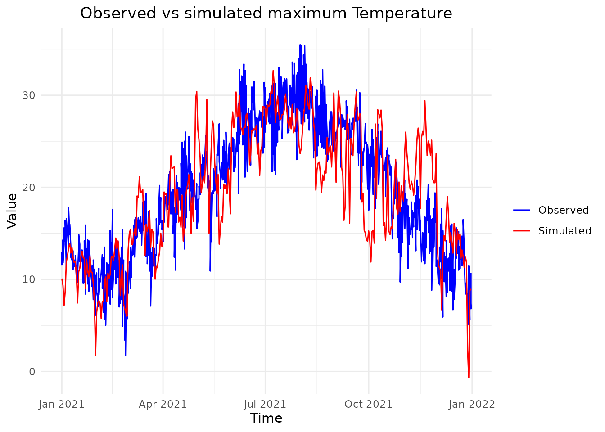
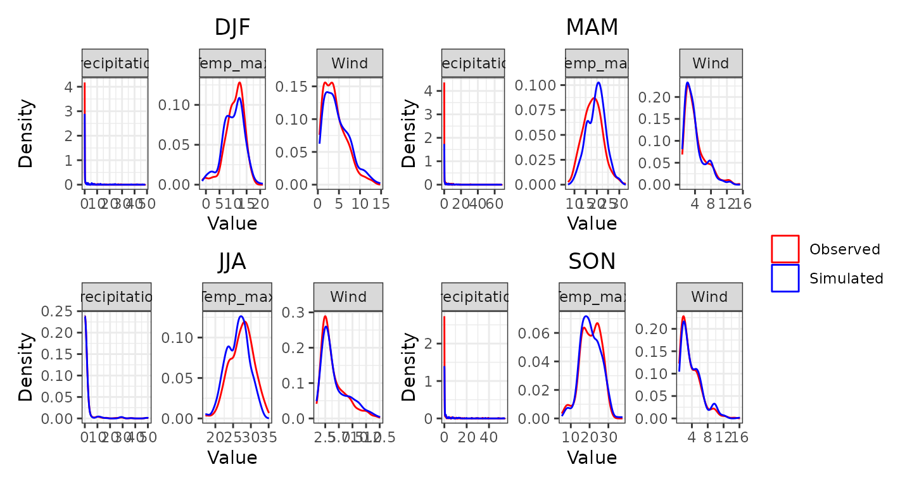
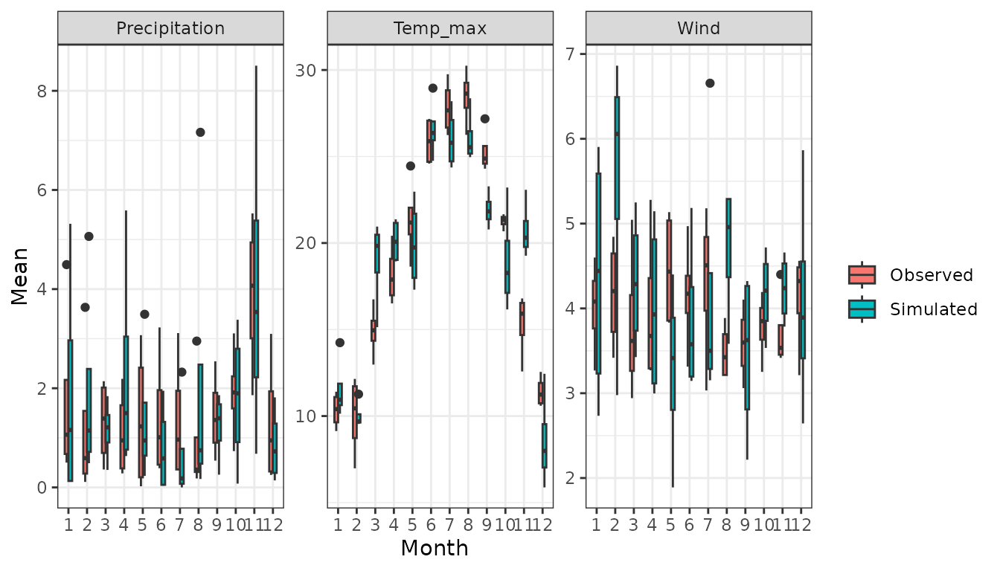
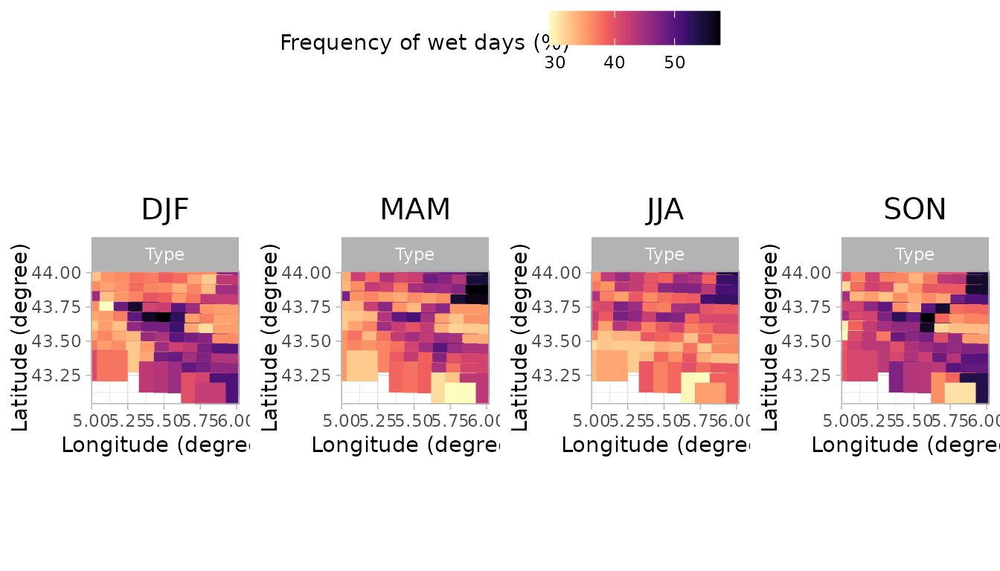
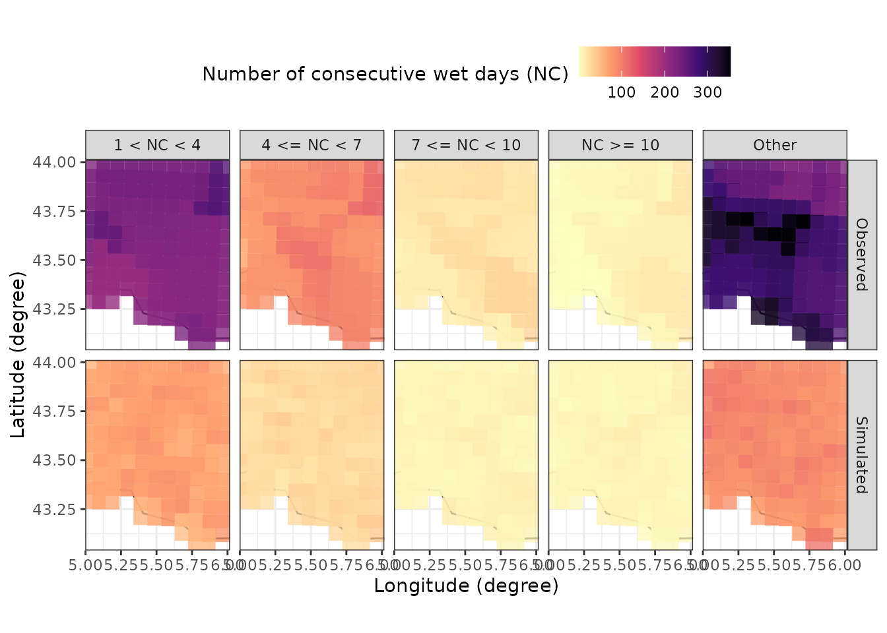

This vignette provides a step-by-step guide on running a stochastic
weather generator using the MSTWeatherGen package. From
loading the historical weather data and spatial coordinates, performing
parameter estimation, to running simulations and generating validation
plots. This guide covers all you need to get started with
MSTWeatherGen, but does not provide the technical details
of the methods considered.
For our simulation, we will need historical weather data of multiple variables and geographic coordinates. Below, we load these datasets stored within the package.
The data considered here is the meteorological dataset SAFRAN, developed by Météo-France. We only consider a small region in the south of France for the period 2017-2021. We consider 3 variables: precipitation, wind, and maximum temperature.
MSTWeatherGen
MSTWeatherGen is designed for multivariate and
spatio-temporal weather generation. Therefore, the meteorological data
to be used (here data) needs to be multiple variables (at
least two variables) defined in a spatial domain (characterized by
coordinates) and a temporal domain (defined by
dates). Thus, the data needs to be in three dimensions
(timelocationvariable).
Alongside the meteorological data, the user needs to provide a two
column matrix of coordinates of each locations considered. Each row
i of this matrix (coordinates[i,]) corresponds
to the x and y coordinates of the datum data[,i,]. Finally,
the user needs also to provide the time (dates here)
corresponding to each point in the first dimension of
data.
Another important point about the meteorological data is the
precipitation variable. Being a special variable in the estimation and
simulation (as it has many zeros), if it is considered, it has to be the
first variable in the meteorological data. If the user wants, one can
also provide the names of the variables considered (here
names).
With the data loaded, we proceed to estimate the parameters required
for simulation. This involves determining weather types, computing
transition probabilities between weather types, estimating the
transformation functions of the variables into normal distribution, and
finally estimating the parameters of the multivariate spatio-temporal
covariance function, all using the MSTWeatherGen_Estim
function.
Before heading to the estimation, we will detail some important
considerations that will help the user use the
MSTWeatherGen_Estim function. First, if the data exhibit
seasonality, it has to be handled somehow. Here, propose to treat each
season separately meaning that the parameters of the model (weather
types, transformation functions, and covariance function) are estimated
at each season. The seasons are up to the user to define using the
following format:
seasons <- list(
s1 = list(min_day = 1, max_day = 29, min_month = 12, max_month = 2),
s2 = list(min_day = 1, max_day = 31, min_month = 3, max_month = 5),
s3 = list(min_day = 1, max_day = 31, min_month = 6, max_month = 8),
s4 = list(min_day = 1, max_day = 30, min_month = 9, max_month = 11)
)We can also provide the names of each season, to be used later for the validation plots:
names_seasons = c("DJF", "MAM", "JJA", "SON")If the considered data does not exhibit seasonality one can use the
whole period to estimate the parameters. To do that, one needs to fix
the argument by_season of the
MSTWeatherGen_Estim as False.
All the data being ready, we can now proceed to the estimation of the
parameters using MSTWeatherGen_Estim function.
names_weather_types = names
swg = MSTWeatherGen_Estim(data = data, seasons = seasons,dates = dates, names = names, by_season = T, scale = T,
precipitation = T,names_weather_types = names_weather_types,
coordinates= coordinates, max_it=100, tmax=1, n1=3, n2=3)
#> ---Final iteration--- 27
#> --Singular Value-- 2164.916 -- Local Percent -- 70.26529 %
#> ---Final iteration--- 34
#> --Singular Value-- 412.6398 -- Local Percent -- 45.76965 %
#> ---Final iteration--- 1
#> --Singular Value-- 144.612 -- Local Percent -- 56.13031 %
#>
#> -----Execution Time----- 3.053
#> Nelder-Mead direct search function minimizer
#> function value for initial parameters = 137.498584
#> Scaled convergence tolerance is 2.04889e-06
#> Stepsize computed as 0.100000
#> BUILD 3 137.534475 137.483541
#> EXTENSION 5 137.498584 137.171996
#> EXTENSION 7 137.483541 136.447626
#> EXTENSION 9 137.171996 115.499672
#> REFLECTION 11 136.447626 93.498874
#> HI-REDUCTION 13 130.857143 93.498874
#> HI-REDUCTION 15 122.896231 93.498874
#> REFLECTION 17 115.499672 66.369290
#> HI-REDUCTION 19 102.760656 66.369290
#> REFLECTION 21 93.498874 51.712460
#> HI-REDUCTION 23 78.741403 51.712460
#> HI-REDUCTION 25 68.894723 51.712460
#> LO-REDUCTION 27 66.369290 51.712460
#> HI-REDUCTION 29 58.132791 51.712460
#> HI-REDUCTION 31 54.427472 51.712460
#> LO-REDUCTION 33 52.620820 51.712460
#> HI-REDUCTION 35 51.929025 51.712460
#> HI-REDUCTION 37 51.753822 51.712460
#> HI-REDUCTION 39 51.748538 51.712460
#> HI-REDUCTION 41 51.717332 51.712460
#> HI-REDUCTION 43 51.717125 51.712460
#> LO-REDUCTION 45 51.712527 51.711557
#> REFLECTION 47 51.712460 51.711220
#> REFLECTION 49 51.711557 51.710760
#> REFLECTION 51 51.711220 51.710160
#> REFLECTION 53 51.710760 51.710127
#> REFLECTION 55 51.710160 51.709272
#> LO-REDUCTION 57 51.710127 51.709272
#> REFLECTION 59 51.709275 51.709221
#> HI-REDUCTION 61 51.709272 51.708880
#> EXTENSION 63 51.709221 51.708310
#> LO-REDUCTION 65 51.708880 51.708310
#> EXTENSION 67 51.708559 51.707660
#> LO-REDUCTION 69 51.708310 51.707660
#> EXTENSION 71 51.707666 51.707204
#> LO-REDUCTION 73 51.707660 51.707197
#> LO-REDUCTION 75 51.707293 51.707197
#> LO-REDUCTION 77 51.707204 51.707195
#> HI-REDUCTION 79 51.707197 51.707168
#> LO-REDUCTION 81 51.707195 51.707168
#> LO-REDUCTION 83 51.707178 51.707168
#> LO-REDUCTION 85 51.707176 51.707168
#> REFLECTION 87 51.707173 51.707167
#> Exiting from Nelder Mead minimizer
#> 89 function evaluations used
#> Nelder-Mead direct search function minimizer
#> function value for initial parameters = 840.657016
#> Scaled convergence tolerance is 1.25268e-05
#> Stepsize computed as 0.100000
#> BUILD 3 840.765597 840.611500
#> EXTENSION 5 840.657016 839.669532
#> EXTENSION 7 840.611500 837.478171
#> EXTENSION 9 839.669532 768.208721
#> REFLECTION 11 837.478171 687.893996
#> HI-REDUCTION 13 820.319814 687.893996
#> HI-REDUCTION 15 794.432656 687.893996
#> REFLECTION 17 768.208721 659.608160
#> HI-REDUCTION 19 720.713664 659.608160
#> HI-REDUCTION 21 688.464622 659.608160
#> REFLECTION 23 687.893996 658.442180
#> HI-REDUCTION 25 659.608160 656.216700
#> LO-REDUCTION 27 658.442180 650.697402
#> HI-REDUCTION 29 656.216700 647.452817
#> LO-REDUCTION 31 650.697402 647.452817
#> HI-REDUCTION 33 648.268332 647.452817
#> HI-REDUCTION 35 647.638057 647.452817
#> HI-REDUCTION 37 647.594296 647.452817
#> LO-REDUCTION 39 647.503462 647.452817
#> EXTENSION 41 647.498230 647.379570
#> LO-REDUCTION 43 647.452817 647.379570
#> EXTENSION 45 647.398920 647.245222
#> LO-REDUCTION 47 647.379570 647.245222
#> EXTENSION 49 647.258055 646.983043
#> EXTENSION 51 647.245222 646.808841
#> EXTENSION 53 646.983043 646.202286
#> EXTENSION 55 646.808841 645.349204
#> LO-REDUCTION 57 646.202286 645.349204
#> REFLECTION 59 645.546334 645.037507
#> EXTENSION 61 645.349204 644.038876
#> LO-REDUCTION 63 645.037507 644.038876
#> EXTENSION 65 644.423837 642.667267
#> LO-REDUCTION 67 644.038876 642.667267
#> REFLECTION 69 643.342410 642.502602
#> EXTENSION 71 642.667267 641.431723
#> LO-REDUCTION 73 642.502602 641.431723
#> HI-REDUCTION 75 641.754719 641.431723
#> HI-REDUCTION 77 641.582267 641.431723
#> LO-REDUCTION 79 641.479050 641.367976
#> HI-REDUCTION 81 641.431723 641.355692
#> HI-REDUCTION 83 641.367976 641.355692
#> LO-REDUCTION 85 641.365618 641.347619
#> HI-REDUCTION 87 641.355692 641.347483
#> HI-REDUCTION 89 641.347970 641.347483
#> HI-REDUCTION 91 641.347619 641.346354
#> HI-REDUCTION 93 641.347483 641.346349
#> HI-REDUCTION 95 641.346354 641.346181
#> HI-REDUCTION 97 641.346349 641.346115
#> REFLECTION 99 641.346181 641.346113
#> Exiting from Nelder Mead minimizer
#> 101 function evaluations used
#> Nelder-Mead direct search function minimizer
#> function value for initial parameters = 860.451448
#> Scaled convergence tolerance is 1.28217e-05
#> Stepsize computed as 0.100000
#> BUILD 3 860.574091 860.400031
#> EXTENSION 5 860.451448 859.335708
#> EXTENSION 7 860.400031 856.855458
#> EXTENSION 9 859.335708 769.995702
#> REFLECTION 11 856.855458 639.799523
#> HI-REDUCTION 13 837.058719 639.799523
#> HI-REDUCTION 15 805.232688 639.799523
#> REFLECTION 17 769.995702 439.713375
#> HI-REDUCTION 19 698.451662 439.713375
#> REFLECTION 21 639.799523 314.897684
#> HI-REDUCTION 23 534.977985 314.897684
#> HI-REDUCTION 25 460.144269 314.897684
#> LO-REDUCTION 27 439.713375 314.897684
#> HI-REDUCTION 29 362.130420 314.897684
#> HI-REDUCTION 31 327.920337 314.897684
#> HI-REDUCTION 33 319.424850 314.897684
#> HI-REDUCTION 35 316.692268 313.562565
#> LO-REDUCTION 37 314.897684 313.562565
#> HI-REDUCTION 39 313.937062 313.562565
#> REFLECTION 41 313.825898 313.556347
#> EXTENSION 43 313.562565 313.183306
#> EXTENSION 45 313.556347 312.587794
#> REFLECTION 47 313.183306 312.092917
#> REFLECTION 49 312.587794 311.578993
#> EXTENSION 51 312.092917 310.789895
#> EXTENSION 53 311.578993 308.143322
#> EXTENSION 55 310.789895 304.610766
#> REFLECTION 57 308.143322 300.940751
#> REFLECTION 59 304.610766 294.258220
#> HI-REDUCTION 61 300.940751 294.258220
#> HI-REDUCTION 63 299.755985 294.258220
#> LO-REDUCTION 65 298.019733 294.258220
#> LO-REDUCTION 67 294.757299 293.653609
#> HI-REDUCTION 69 294.258220 293.653609
#> LO-REDUCTION 71 294.095116 293.653609
#> HI-REDUCTION 73 293.856634 293.653609
#> LO-REDUCTION 75 293.822029 293.653609
#> LO-REDUCTION 77 293.675984 293.645675
#> HI-REDUCTION 79 293.653609 293.645675
#> LO-REDUCTION 81 293.646656 293.641698
#> HI-REDUCTION 83 293.645675 293.640803
#> HI-REDUCTION 85 293.641698 293.640803
#> LO-REDUCTION 87 293.641217 293.640656
#> HI-REDUCTION 89 293.640803 293.640446
#> HI-REDUCTION 91 293.640656 293.640390
#> LO-REDUCTION 93 293.640446 293.640319
#> HI-REDUCTION 95 293.640390 293.640319
#> HI-REDUCTION 97 293.640335 293.640319
#> Exiting from Nelder Mead minimizer
#> 99 function evaluations used
#> Nelder-Mead direct search function minimizer
#> function value for initial parameters = 202.088830
#> Scaled convergence tolerance is 3.01136e-06
#> Stepsize computed as 0.100000
#> BUILD 3 202.089491 202.088570
#> EXTENSION 5 202.088830 202.078046
#> EXTENSION 7 202.088570 202.040034
#> EXTENSION 9 202.078046 197.931369
#> REFLECTION 11 202.040034 190.795507
#> HI-REDUCTION 13 201.375163 190.795507
#> HI-REDUCTION 15 199.777725 190.795507
#> REFLECTION 17 197.931369 171.702038
#> HI-REDUCTION 19 194.241664 171.702038
#> REFLECTION 21 190.795507 163.599720
#> HI-REDUCTION 23 182.178500 163.599720
#> HI-REDUCTION 25 174.248135 163.599720
#> LO-REDUCTION 27 171.702038 161.793478
#> HI-REDUCTION 29 164.822559 161.793478
#> HI-REDUCTION 31 163.599720 161.793478
#> HI-REDUCTION 33 162.355786 161.793478
#> HI-REDUCTION 35 162.103135 161.793478
#> LO-REDUCTION 37 161.916437 161.793478
#> EXTENSION 39 161.837476 161.657338
#> HI-REDUCTION 41 161.793478 161.657338
#> EXTENSION 43 161.721275 161.397478
#> LO-REDUCTION 45 161.657338 161.397478
#> EXTENSION 47 161.407483 160.781000
#> LO-REDUCTION 49 161.397478 160.781000
#> EXTENSION 51 160.963153 159.693680
#> EXTENSION 53 160.781000 158.534978
#> EXTENSION 55 159.693680 155.328514
#> EXTENSION 57 158.534978 149.887620
#> HI-REDUCTION 59 155.408424 149.887620
#> LO-REDUCTION 61 155.328514 149.887620
#> HI-REDUCTION 63 152.930205 149.887620
#> LO-REDUCTION 65 151.933686 149.887620
#> EXTENSION 67 150.452418 147.062730
#> EXTENSION 69 149.887620 143.731460
#> HI-REDUCTION 71 147.437275 143.731460
#> REFLECTION 73 147.062730 143.070368
#> LO-REDUCTION 75 143.731460 142.142431
#> REFLECTION 77 143.070368 142.084873
#> HI-REDUCTION 79 142.142431 142.084873
#> HI-REDUCTION 81 142.140534 141.825759
#> HI-REDUCTION 83 142.084873 141.792064
#> HI-REDUCTION 85 141.825759 141.597554
#> REFLECTION 87 141.792064 141.571795
#> HI-REDUCTION 89 141.664612 141.571795
#> LO-REDUCTION 91 141.597554 141.567008
#> REFLECTION 93 141.571795 141.565070
#> HI-REDUCTION 95 141.567008 141.558836
#> HI-REDUCTION 97 141.565070 141.557595
#> HI-REDUCTION 99 141.558836 141.557595
#> Exiting from Nelder Mead minimizer
#> 101 function evaluations used
#> Nelder-Mead direct search function minimizer
#> function value for initial parameters = 415.858940
#> Scaled convergence tolerance is 6.19678e-06
#> Stepsize computed as 0.100000
#> BUILD 3 415.860140 415.858466
#> EXTENSION 5 415.858940 415.839363
#> EXTENSION 7 415.858466 415.770382
#> EXTENSION 9 415.839363 408.547355
#> REFLECTION 11 415.770382 397.179148
#> HI-REDUCTION 13 414.568869 397.179148
#> HI-REDUCTION 15 411.728096 397.179148
#> REFLECTION 17 408.547355 370.498555
#> HI-REDUCTION 19 402.532287 370.498555
#> LO-REDUCTION 21 397.179148 370.498555
#> HI-REDUCTION 23 387.672782 370.498555
#> HI-REDUCTION 25 380.139103 370.498555
#> REFLECTION 27 371.538331 365.394565
#> REFLECTION 29 370.498555 364.940237
#> HI-REDUCTION 31 366.491954 364.940237
#> HI-REDUCTION 33 365.394565 364.940237
#> EXTENSION 35 365.289619 364.136104
#> REFLECTION 37 364.940237 363.741586
#> EXTENSION 39 364.136104 362.534152
#> EXTENSION 41 363.741586 359.012271
#> LO-REDUCTION 43 362.534152 359.012271
#> EXTENSION 45 359.516000 348.134080
#> LO-REDUCTION 47 359.012271 348.134080
#> REFLECTION 49 353.178736 342.334333
#> HI-REDUCTION 51 348.134080 342.334333
#> REFLECTION 53 347.534579 339.409591
#> HI-REDUCTION 55 343.012362 339.409591
#> HI-REDUCTION 57 342.334333 339.409591
#> HI-REDUCTION 59 341.144616 339.409591
#> EXTENSION 61 340.601264 338.568215
#> HI-REDUCTION 63 339.409591 338.568215
#> HI-REDUCTION 65 339.373202 338.568215
#> REFLECTION 67 338.843949 338.463411
#> HI-REDUCTION 69 338.568215 338.405625
#> LO-REDUCTION 71 338.463411 338.348366
#> HI-REDUCTION 73 338.405625 338.307282
#> HI-REDUCTION 75 338.348366 338.307282
#> LO-REDUCTION 77 338.315091 338.298454
#> HI-REDUCTION 79 338.307282 338.298085
#> HI-REDUCTION 81 338.298454 338.294204
#> HI-REDUCTION 83 338.298085 338.294204
#> LO-REDUCTION 85 338.295122 338.293231
#> HI-REDUCTION 87 338.294204 338.293231
#> LO-REDUCTION 89 338.293421 338.293231
#> LO-REDUCTION 91 338.293289 338.293158
#> HI-REDUCTION 93 338.293231 338.293114
#> HI-REDUCTION 95 338.293158 338.293114
#> LO-REDUCTION 97 338.293141 338.293105
#> HI-REDUCTION 99 338.293114 338.293105
#> Exiting from Nelder Mead minimizer
#> 101 function evaluations used
#> Nelder-Mead direct search function minimizer
#> function value for initial parameters = 432.666140
#> Scaled convergence tolerance is 6.44723e-06
#> Stepsize computed as 0.100000
#> BUILD 3 432.667736 432.665511
#> EXTENSION 5 432.666140 432.640108
#> EXTENSION 7 432.665511 432.548353
#> EXTENSION 9 432.640108 422.510990
#> REFLECTION 11 432.548353 402.910891
#> HI-REDUCTION 13 430.941766 402.910891
#> HI-REDUCTION 15 427.063437 402.910891
#> REFLECTION 17 422.510990 333.032814
#> HI-REDUCTION 19 412.867356 333.032814
#> REFLECTION 21 402.910891 234.023990
#> HI-REDUCTION 23 374.402705 234.023990
#> LO-REDUCTION 25 333.032814 207.752790
#> HI-REDUCTION 27 287.042244 207.752790
#> REFLECTION 29 234.023990 160.927124
#> LO-REDUCTION 31 207.752790 160.168258
#> HI-REDUCTION 33 177.523157 160.168258
#> HI-REDUCTION 35 165.655969 160.168258
#> HI-REDUCTION 37 161.869791 160.168258
#> HI-REDUCTION 39 160.927124 160.168258
#> LO-REDUCTION 41 160.828039 160.168258
#> EXTENSION 43 160.422753 159.293481
#> LO-REDUCTION 45 160.168258 159.293481
#> EXTENSION 47 159.687421 158.660271
#> EXTENSION 49 159.293481 156.977916
#> LO-REDUCTION 51 158.660271 156.977916
#> EXTENSION 53 157.470108 152.819004
#> EXTENSION 55 156.977916 150.337665
#> EXTENSION 57 152.819004 126.254154
#> LO-REDUCTION 59 150.337665 126.254154
#> REFLECTION 61 128.429930 103.751201
#> REFLECTION 63 126.254154 86.768964
#> HI-REDUCTION 65 107.347196 86.768964
#> HI-REDUCTION 67 103.751201 86.768964
#> LO-REDUCTION 69 99.167127 86.768964
#> HI-REDUCTION 71 94.142609 86.768964
#> LO-REDUCTION 73 92.785417 86.768964
#> REFLECTION 75 87.189694 83.124687
#> REFLECTION 77 86.768964 82.631894
#> HI-REDUCTION 79 83.731361 82.631894
#> LO-REDUCTION 81 83.124687 80.155910
#> HI-REDUCTION 83 82.631894 80.155910
#> HI-REDUCTION 85 80.784706 80.155910
#> HI-REDUCTION 87 80.749050 80.155910
#> EXTENSION 89 80.329004 79.107211
#> LO-REDUCTION 91 80.155910 79.107211
#> EXTENSION 93 79.318081 78.023160
#> LO-REDUCTION 95 79.107211 78.023160
#> EXTENSION 97 78.666718 76.621687
#> LO-REDUCTION 99 78.023160 76.621687
#> Exiting from Nelder Mead minimizer
#> 101 function evaluations used
#> Nelder-Mead direct search function minimizer
#> function value for initial parameters = 21.254509
#> Scaled convergence tolerance is 3.16717e-07
#> Stepsize computed as 0.100000
#> Exiting from Nelder Mead minimizer
#> 3 function evaluations used
#> Nelder-Mead direct search function minimizer
#> function value for initial parameters = 1092.542097
#> Scaled convergence tolerance is 1.62801e-05
#> Stepsize computed as 0.100000
#> BUILD 3 1092.542154 1092.542075
#> EXTENSION 5 1092.542097 1092.539744
#> EXTENSION 7 1092.542075 1092.523867
#> EXTENSION 9 1092.539744 1069.628854
#> REFLECTION 11 1092.523867 973.049874
#> HI-REDUCTION 13 1091.477811 973.049874
#> HI-REDUCTION 15 1084.839857 973.049874
#> REFLECTION 17 1069.628854 744.004503
#> HI-REDUCTION 19 1022.610847 744.004503
#> REFLECTION 21 973.049874 547.954196
#> HI-REDUCTION 23 862.173451 547.954196
#> HI-REDUCTION 25 771.464013 547.954196
#> REFLECTION 27 744.004503 526.117791
#> HI-REDUCTION 29 637.560183 526.117791
#> HI-REDUCTION 31 580.807778 526.117791
#> LO-REDUCTION 33 547.954196 525.319725
#> HI-REDUCTION 35 533.573455 525.319725
#> LO-REDUCTION 37 526.117791 525.182484
#> HI-REDUCTION 39 525.319725 525.161942
#> EXTENSION 41 525.182484 524.219306
#> LO-REDUCTION 43 525.161942 524.219306
#> REFLECTION 45 524.403514 523.736424
#> HI-REDUCTION 47 524.219306 523.736424
#> EXTENSION 49 523.999708 522.983109
#> EXTENSION 51 523.736424 522.341731
#> EXTENSION 53 522.983109 519.670419
#> EXTENSION 55 522.341731 517.105977
#> EXTENSION 57 519.670419 504.546254
#> EXTENSION 59 517.105977 482.745021
#> HI-REDUCTION 61 506.135244 482.745021
#> LO-REDUCTION 63 504.546254 482.745021
#> HI-REDUCTION 65 493.124240 482.745021
#> HI-REDUCTION 67 487.550282 482.745021
#> EXTENSION 69 487.506130 476.445945
#> REFLECTION 71 482.745021 476.339988
#> REFLECTION 73 476.445945 467.241540
#> HI-REDUCTION 75 476.339988 467.241540
#> LO-REDUCTION 77 472.976593 467.241540
#> HI-REDUCTION 79 470.099461 467.241540
#> LO-REDUCTION 81 469.095169 467.241540
#> HI-REDUCTION 83 467.990989 467.241540
#> HI-REDUCTION 85 467.742462 467.241540
#> REFLECTION 87 467.588387 467.207292
#> REFLECTION 89 467.241540 467.112823
#> REFLECTION 91 467.207292 467.055783
#> HI-REDUCTION 93 467.112823 467.053810
#> HI-REDUCTION 95 467.055783 466.984515
#> HI-REDUCTION 97 467.053810 466.984515
#> REFLECTION 99 467.014057 466.967572
#> Exiting from Nelder Mead minimizer
#> 101 function evaluations used
#> Nelder-Mead direct search function minimizer
#> function value for initial parameters = 1097.495837
#> Scaled convergence tolerance is 1.6354e-05
#> Stepsize computed as 0.100000
#> BUILD 3 1097.495902 1097.495812
#> EXTENSION 5 1097.495837 1097.493159
#> EXTENSION 7 1097.495812 1097.475081
#> EXTENSION 9 1097.493159 1071.703584
#> REFLECTION 11 1097.475081 962.306683
#> HI-REDUCTION 13 1096.287162 962.306683
#> HI-REDUCTION 15 1088.793161 962.306683
#> REFLECTION 17 1071.703584 682.762583
#> HI-REDUCTION 19 1018.778799 682.762583
#> REFLECTION 21 962.306683 358.224079
#> HI-REDUCTION 23 831.807499 358.224079
#> REFLECTION 25 682.762583 234.296544
#> HI-REDUCTION 27 471.602193 234.296544
#> HI-REDUCTION 29 358.224079 234.296544
#> HI-REDUCTION 31 324.764237 234.296544
#> HI-REDUCTION 33 250.727979 212.593718
#> HI-REDUCTION 35 234.296544 165.637883
#> HI-REDUCTION 37 212.593718 88.298684
#> REFLECTION 39 165.637883 83.450086
#> HI-REDUCTION 41 111.807559 83.450086
#> HI-REDUCTION 43 91.753098 83.450086
#> LO-REDUCTION 45 88.298684 81.207848
#> HI-REDUCTION 47 83.450086 81.207848
#> LO-REDUCTION 49 81.374955 81.207848
#> REFLECTION 51 81.321935 81.205174
#> HI-REDUCTION 53 81.207848 80.551047
#> REFLECTION 55 81.205174 80.520331
#> HI-REDUCTION 57 80.677906 80.520331
#> HI-REDUCTION 59 80.560464 80.520331
#> HI-REDUCTION 61 80.551047 80.520331
#> EXTENSION 63 80.536695 80.500931
#> EXTENSION 65 80.520331 80.434854
#> LO-REDUCTION 67 80.500931 80.434854
#> EXTENSION 69 80.440409 80.287670
#> LO-REDUCTION 71 80.434854 80.287670
#> EXTENSION 73 80.328856 80.036037
#> EXTENSION 75 80.287670 79.853943
#> EXTENSION 77 80.036037 79.176497
#> EXTENSION 79 79.853943 78.543499
#> EXTENSION 81 79.176497 76.415782
#> EXTENSION 83 78.543499 73.660234
#> EXTENSION 85 76.415782 64.573360
#> EXTENSION 87 73.660234 52.916743
#> HI-REDUCTION 89 65.578773 52.916743
#> LO-REDUCTION 91 64.573360 52.916743
#> HI-REDUCTION 93 57.528436 52.916743
#> HI-REDUCTION 95 55.244514 52.916743
#> EXTENSION 97 54.755995 49.043174
#> LO-REDUCTION 99 52.916743 49.043174
#> Exiting from Nelder Mead minimizer
#> 101 function evaluations used
#> Nelder-Mead direct search function minimizer
#> function value for initial parameters = 394.574303
#> Scaled convergence tolerance is 5.87962e-06
#> Stepsize computed as 0.100000
#> BUILD 3 394.574325 394.574295
#> EXTENSION 5 394.574303 394.573417
#> EXTENSION 7 394.574295 394.567567
#> EXTENSION 9 394.573417 388.604593
#> REFLECTION 11 394.567567 369.309213
#> HI-REDUCTION 13 394.218485 369.309213
#> HI-REDUCTION 15 392.309510 369.309213
#> REFLECTION 17 388.604593 325.156419
#> HI-REDUCTION 19 378.832573 325.156419
#> REFLECTION 21 369.309213 301.559912
#> HI-REDUCTION 23 348.099359 301.559912
#> HI-REDUCTION 25 330.503310 301.559912
#> LO-REDUCTION 27 325.156419 300.566514
#> HI-REDUCTION 29 309.587790 300.566514
#> HI-REDUCTION 31 303.086940 300.566514
#> HI-REDUCTION 33 301.559912 300.566514
#> HI-REDUCTION 35 301.037683 300.493647
#> LO-REDUCTION 37 300.566514 300.396990
#> HI-REDUCTION 39 300.493647 300.396990
#> EXTENSION 41 300.409974 300.303136
#> EXTENSION 43 300.396990 300.084560
#> REFLECTION 45 300.303136 300.081583
#> EXTENSION 47 300.084560 299.569942
#> EXTENSION 49 300.081583 299.398388
#> EXTENSION 51 299.569942 297.850472
#> LO-REDUCTION 53 299.398388 297.850472
#> EXTENSION 55 297.853700 293.664003
#> LO-REDUCTION 57 297.850472 293.664003
#> EXTENSION 59 295.620545 286.855930
#> HI-REDUCTION 61 293.664003 286.855930
#> REFLECTION 63 292.726223 285.655903
#> HI-REDUCTION 65 288.528401 285.655903
#> HI-REDUCTION 67 286.855930 285.655903
#> REFLECTION 69 286.636985 285.269729
#> REFLECTION 71 285.655903 284.874953
#> REFLECTION 73 285.269729 284.310755
#> LO-REDUCTION 75 284.874953 284.069650
#> LO-REDUCTION 77 284.310755 284.052149
#> LO-REDUCTION 79 284.069650 283.838946
#> HI-REDUCTION 81 284.052149 283.827930
#> HI-REDUCTION 83 283.838946 283.810794
#> HI-REDUCTION 85 283.827930 283.794249
#> LO-REDUCTION 87 283.810794 283.782706
#> LO-REDUCTION 89 283.794249 283.779671
#> LO-REDUCTION 91 283.782706 283.772302
#> HI-REDUCTION 93 283.779671 283.771860
#> HI-REDUCTION 95 283.772302 283.769259
#> HI-REDUCTION 97 283.771860 283.769259
#> REFLECTION 99 283.770015 283.768067
#> Exiting from Nelder Mead minimizer
#> 101 function evaluations used
#> Nelder-Mead direct search function minimizer
#> function value for initial parameters = 422.514383
#> Scaled convergence tolerance is 6.29595e-06
#> Stepsize computed as 0.100000
#> BUILD 3 422.514405 422.514375
#> EXTENSION 5 422.514383 422.513510
#> EXTENSION 7 422.514375 422.507661
#> EXTENSION 9 422.513510 416.096432
#> REFLECTION 11 422.507661 394.784649
#> HI-REDUCTION 13 422.145368 394.784649
#> HI-REDUCTION 15 420.111784 394.784649
#> REFLECTION 17 416.096432 343.634260
#> HI-REDUCTION 19 405.364476 343.634260
#> REFLECTION 21 394.784649 305.814191
#> HI-REDUCTION 23 370.729568 305.814191
#> HI-REDUCTION 25 350.087164 305.814191
#> LO-REDUCTION 27 343.634260 305.814191
#> HI-REDUCTION 29 319.960924 305.814191
#> HI-REDUCTION 31 309.349682 305.814191
#> HI-REDUCTION 33 308.494280 305.814191
#> HI-REDUCTION 35 306.096158 305.691422
#> HI-REDUCTION 37 305.814191 305.657475
#> REFLECTION 39 305.691422 305.485072
#> LO-REDUCTION 41 305.657475 305.394691
#> LO-REDUCTION 43 305.485072 305.371989
#> REFLECTION 45 305.394691 305.369941
#> REFLECTION 47 305.371989 305.267587
#> LO-REDUCTION 49 305.369941 305.259978
#> LO-REDUCTION 51 305.267587 305.217126
#> HI-REDUCTION 53 305.259978 305.210619
#> HI-REDUCTION 55 305.217126 305.199203
#> HI-REDUCTION 57 305.210619 305.199203
#> REFLECTION 59 305.201691 305.190777
#> HI-REDUCTION 61 305.199203 305.190777
#> EXTENSION 63 305.192170 305.179941
#> EXTENSION 65 305.190777 305.164471
#> EXTENSION 67 305.179941 305.153180
#> EXTENSION 69 305.164471 305.091868
#> LO-REDUCTION 71 305.153180 305.091868
#> EXTENSION 73 305.106743 304.966600
#> LO-REDUCTION 75 305.091868 304.966600
#> EXTENSION 77 305.001343 304.748795
#> EXTENSION 79 304.966600 304.594431
#> EXTENSION 81 304.748795 303.993259
#> EXTENSION 83 304.594431 303.432754
#> EXTENSION 85 303.993259 301.421145
#> EXTENSION 87 303.432754 298.390194
#> EXTENSION 89 301.421145 293.730004
#> HI-REDUCTION 91 298.390194 293.730004
#> LO-REDUCTION 93 298.159826 293.730004
#> HI-REDUCTION 95 294.951269 293.730004
#> HI-REDUCTION 97 294.030584 293.730004
#> EXTENSION 99 293.802468 292.132496
#> Exiting from Nelder Mead minimizer
#> 101 function evaluations used
#> Nelder-Mead direct search function minimizer
#> function value for initial parameters = 425.828166
#> Scaled convergence tolerance is 6.34533e-06
#> Stepsize computed as 0.100000
#> BUILD 3 425.828190 425.828156
#> EXTENSION 5 425.828166 425.827168
#> EXTENSION 7 425.828156 425.820476
#> EXTENSION 9 425.827168 418.346433
#> REFLECTION 11 425.820476 392.066574
#> HI-REDUCTION 13 425.404219 392.066574
#> HI-REDUCTION 15 423.051738 392.066574
#> REFLECTION 17 418.346433 316.702578
#> HI-REDUCTION 19 405.396574 316.702578
#> REFLECTION 21 392.066574 213.379935
#> HI-REDUCTION 23 359.272294 213.379935
#> REFLECTION 25 316.702578 182.160226
#> HI-REDUCTION 27 250.311374 182.160226
#> HI-REDUCTION 29 213.379935 182.160226
#> HI-REDUCTION 31 201.919659 177.321377
#> HI-REDUCTION 33 182.160226 164.416404
#> HI-REDUCTION 35 177.321377 127.353779
#> REFLECTION 37 164.416404 121.709679
#> HI-REDUCTION 39 141.096054 121.709679
#> LO-REDUCTION 41 127.353779 121.709679
#> HI-REDUCTION 43 123.234183 121.709679
#> HI-REDUCTION 45 122.015586 121.709679
#> LO-REDUCTION 47 121.816969 121.646476
#> LO-REDUCTION 49 121.709679 121.580354
#> HI-REDUCTION 51 121.646476 121.553051
#> HI-REDUCTION 53 121.580354 121.508203
#> LO-REDUCTION 55 121.553051 121.508203
#> HI-REDUCTION 57 121.518537 121.508203
#> REFLECTION 59 121.517651 121.503469
#> REFLECTION 61 121.508203 121.498400
#> EXTENSION 63 121.503469 121.488262
#> EXTENSION 65 121.498400 121.466692
#> EXTENSION 67 121.488262 121.445068
#> EXTENSION 69 121.466692 121.368382
#> EXTENSION 71 121.445068 121.330031
#> EXTENSION 73 121.368382 121.074979
#> LO-REDUCTION 75 121.330031 121.074979
#> EXTENSION 77 121.080760 120.540231
#> LO-REDUCTION 79 121.074979 120.540231
#> EXTENSION 81 120.798354 119.907432
#> EXTENSION 83 120.540231 118.846602
#> EXTENSION 85 119.907432 117.013963
#> EXTENSION 87 118.846602 111.998194
#> EXTENSION 89 117.013963 98.368252
#> REFLECTION 91 111.998194 88.067807
#> REFLECTION 93 98.368252 75.302234
#> HI-REDUCTION 95 88.067807 75.302234
#> HI-REDUCTION 97 87.265074 75.302234
#> HI-REDUCTION 99 82.995301 75.302234
#> Exiting from Nelder Mead minimizer
#> 101 function evaluations used
#> Nelder-Mead direct search function minimizer
#> function value for initial parameters = 167.787795
#> Scaled convergence tolerance is 2.50023e-06
#> Stepsize computed as 0.100000
#> BUILD 3 167.796989 167.783950
#> EXTENSION 5 167.787795 167.702068
#> EXTENSION 7 167.783950 167.505920
#> EXTENSION 9 167.702068 160.018594
#> REFLECTION 11 167.505920 149.954690
#> HI-REDUCTION 13 165.819812 149.954690
#> HI-REDUCTION 15 163.019219 149.954690
#> REFLECTION 17 160.018594 144.010127
#> HI-REDUCTION 19 154.286516 144.010127
#> HI-REDUCTION 21 149.954690 144.010127
#> REFLECTION 23 149.928605 143.841257
#> HI-REDUCTION 25 144.653357 143.841257
#> HI-REDUCTION 27 144.010127 142.655050
#> REFLECTION 29 143.841257 142.326689
#> HI-REDUCTION 31 142.655050 142.326689
#> REFLECTION 33 142.410246 142.074128
#> REFLECTION 35 142.326689 141.975351
#> REFLECTION 37 142.074128 141.705596
#> REFLECTION 39 141.975351 141.598892
#> REFLECTION 41 141.705596 141.299967
#> REFLECTION 43 141.598892 141.195148
#> REFLECTION 45 141.299967 140.852020
#> REFLECTION 47 141.195148 140.762031
#> REFLECTION 49 140.852020 140.356014
#> REFLECTION 51 140.762031 140.297668
#> REFLECTION 53 140.356014 139.805750
#> REFLECTION 55 140.297668 139.800605
#> REFLECTION 57 139.805750 139.194710
#> LO-REDUCTION 59 139.800605 139.194710
#> REFLECTION 61 139.233805 139.023420
#> HI-REDUCTION 63 139.194710 138.972098
#> EXTENSION 65 139.023420 138.284391
#> LO-REDUCTION 67 138.972098 138.284391
#> EXTENSION 69 138.626632 137.203958
#> EXTENSION 71 138.284391 136.194637
#> EXTENSION 73 137.203958 131.649549
#> LO-REDUCTION 75 136.194637 131.649549
#> LO-REDUCTION 77 132.776625 128.699318
#> LO-REDUCTION 79 131.649549 128.699318
#> REFLECTION 81 129.132493 124.561560
#> HI-REDUCTION 83 128.699318 124.561560
#> EXTENSION 85 127.323844 123.790402
#> EXTENSION 87 124.561560 117.410019
#> HI-REDUCTION 89 123.790402 117.410019
#> HI-REDUCTION 91 121.350292 117.410019
#> HI-REDUCTION 93 121.314081 117.410019
#> HI-REDUCTION 95 120.107521 117.410019
#> HI-REDUCTION 97 119.688111 117.410019
#> HI-REDUCTION 99 119.233045 117.410019
#> Exiting from Nelder Mead minimizer
#> 101 function evaluations used
#> Nelder-Mead direct search function minimizer
#> function value for initial parameters = 342.290612
#> Scaled convergence tolerance is 5.10053e-06
#> Stepsize computed as 0.100000
#> BUILD 3 342.312533 342.281448
#> EXTENSION 5 342.290612 342.084374
#> EXTENSION 7 342.281448 341.606975
#> EXTENSION 9 342.084374 322.909665
#> REFLECTION 11 341.606975 299.750484
#> HI-REDUCTION 13 337.375385 299.750484
#> HI-REDUCTION 15 330.271314 299.750484
#> REFLECTION 17 322.909665 285.357232
#> HI-REDUCTION 19 309.527911 285.357232
#> HI-REDUCTION 21 299.836058 285.357232
#> REFLECTION 23 299.750484 285.306679
#> HI-REDUCTION 25 288.704325 285.306679
#> HI-REDUCTION 27 285.357232 284.313218
#> LO-REDUCTION 29 285.306679 283.952648
#> HI-REDUCTION 31 284.313218 283.784683
#> HI-REDUCTION 33 283.952648 283.784683
#> REFLECTION 35 283.921918 283.663309
#> HI-REDUCTION 37 283.784683 283.663309
#> REFLECTION 39 283.714982 283.648453
#> EXTENSION 41 283.663309 283.509737
#> EXTENSION 43 283.648453 283.442129
#> EXTENSION 45 283.509737 282.999832
#> EXTENSION 47 283.442129 282.858497
#> EXTENSION 49 282.999832 281.122933
#> LO-REDUCTION 51 282.858497 281.122933
#> EXTENSION 53 281.673016 277.710858
#> LO-REDUCTION 55 281.122933 277.710858
#> REFLECTION 57 278.929553 275.503657
#> LO-REDUCTION 59 277.710858 275.503657
#> HI-REDUCTION 61 276.396556 275.503657
#> HI-REDUCTION 63 275.871388 275.503657
#> LO-REDUCTION 65 275.749189 275.503657
#> LO-REDUCTION 67 275.559947 275.494600
#> HI-REDUCTION 69 275.503657 275.494600
#> HI-REDUCTION 71 275.498642 275.488432
#> HI-REDUCTION 73 275.494600 275.487603
#> HI-REDUCTION 75 275.488432 275.486970
#> HI-REDUCTION 77 275.487603 275.486335
#> HI-REDUCTION 79 275.486970 275.486219
#> HI-REDUCTION 81 275.486335 275.486082
#> HI-REDUCTION 83 275.486219 275.486046
#> HI-REDUCTION 85 275.486082 275.486032
#> HI-REDUCTION 87 275.486046 275.485993
#> HI-REDUCTION 89 275.486032 275.485993
#> LO-REDUCTION 91 275.486003 275.485993
#> Exiting from Nelder Mead minimizer
#> 93 function evaluations used
#> Nelder-Mead direct search function minimizer
#> function value for initial parameters = 347.694107
#> Scaled convergence tolerance is 5.18105e-06
#> Stepsize computed as 0.100000
#> BUILD 3 347.719188 347.683625
#> EXTENSION 5 347.694107 347.456980
#> EXTENSION 7 347.683625 346.904246
#> EXTENSION 9 347.456980 323.291639
#> REFLECTION 11 346.904246 286.053017
#> HI-REDUCTION 13 341.871472 286.053017
#> HI-REDUCTION 15 333.023126 286.053017
#> REFLECTION 17 323.291639 211.835358
#> HI-REDUCTION 19 303.490151 211.835358
#> REFLECTION 21 286.053017 157.446369
#> HI-REDUCTION 23 249.763587 157.446369
#> HI-REDUCTION 25 220.532335 157.446369
#> REFLECTION 27 211.835358 155.918665
#> HI-REDUCTION 29 179.486335 155.918665
#> HI-REDUCTION 31 164.180132 155.918665
#> HI-REDUCTION 33 158.425384 155.918665
#> LO-REDUCTION 35 157.446369 155.896372
#> HI-REDUCTION 37 155.918665 155.704588
#> HI-REDUCTION 39 155.896372 155.589528
#> REFLECTION 41 155.704588 155.567918
#> REFLECTION 43 155.589528 155.295790
#> LO-REDUCTION 45 155.567918 155.295790
#> REFLECTION 47 155.296434 155.292372
#> HI-REDUCTION 49 155.295790 155.146837
#> EXTENSION 51 155.292372 154.917913
#> LO-REDUCTION 53 155.146837 154.917913
#> EXTENSION 55 155.035494 154.585814
#> EXTENSION 57 154.917913 154.293099
#> EXTENSION 59 154.585814 153.268995
#> EXTENSION 61 154.293099 152.706849
#> EXTENSION 63 153.268995 149.217143
#> LO-REDUCTION 65 152.706849 149.217143
#> EXTENSION 67 149.692288 135.753088
#> LO-REDUCTION 69 149.217143 135.753088
#> REFLECTION 71 137.574456 112.576928
#> REFLECTION 73 135.753088 107.894369
#> HI-REDUCTION 75 123.845437 107.894369
#> REFLECTION 77 112.576928 96.839601
#> HI-REDUCTION 79 107.894369 96.839601
#> LO-REDUCTION 81 106.669659 96.839601
#> HI-REDUCTION 83 102.204644 96.839601
#> REFLECTION 85 100.211787 94.782657
#> HI-REDUCTION 87 97.734410 94.782657
#> HI-REDUCTION 89 96.839601 94.782657
#> EXTENSION 91 96.581154 94.160656
#> HI-REDUCTION 93 95.376498 94.160656
#> REFLECTION 95 94.782657 93.568703
#> REFLECTION 97 94.160656 92.893180
#> HI-REDUCTION 99 93.568703 92.893180
#> Exiting from Nelder Mead minimizer
#> 101 function evaluations used
#> ---Final iteration--- 14
#> --Singular Value-- 3707.34 -- Local Percent -- 88.08402 %
#> ---Final iteration--- 187
#> --Singular Value-- 340.7072 -- Local Percent -- 31.63652 %
#> ---Final iteration--- 2
#> --Singular Value-- 134.1718 -- Local Percent -- 54.84311 %
#>
#> -----Execution Time----- 3.706
#> Nelder-Mead direct search function minimizer
#> function value for initial parameters = 165.381007
#> Scaled convergence tolerance is 2.46437e-06
#> Stepsize computed as 0.100000
#> BUILD 3 165.381024 165.381001
#> EXTENSION 5 165.381007 165.380331
#> EXTENSION 7 165.381001 165.375898
#> EXTENSION 9 165.380331 161.282954
#> REFLECTION 11 165.375898 150.392969
#> HI-REDUCTION 13 165.117725 150.392969
#> HI-REDUCTION 15 163.759257 150.392969
#> REFLECTION 17 161.282954 134.070032
#> HI-REDUCTION 19 155.430595 134.070032
#> LO-REDUCTION 21 150.392969 134.070032
#> HI-REDUCTION 23 143.151116 134.070032
#> HI-REDUCTION 25 138.604408 134.070032
#> REFLECTION 27 134.434842 133.639935
#> LO-REDUCTION 29 134.070032 132.914564
#> HI-REDUCTION 31 133.639935 132.914564
#> LO-REDUCTION 33 132.971185 132.914564
#> REFLECTION 35 132.936865 132.809475
#> HI-REDUCTION 37 132.914564 132.770572
#> REFLECTION 39 132.809475 132.706262
#> HI-REDUCTION 41 132.770572 132.706262
#> EXTENSION 43 132.737116 132.605365
#> EXTENSION 45 132.706262 132.520110
#> EXTENSION 47 132.605365 132.190159
#> EXTENSION 49 132.520110 132.002643
#> EXTENSION 51 132.190159 130.833545
#> LO-REDUCTION 53 132.002643 130.833545
#> REFLECTION 55 131.155780 129.815502
#> EXTENSION 57 130.833545 128.869275
#> REFLECTION 59 129.815502 126.956550
#> REFLECTION 61 128.869275 126.520713
#> REFLECTION 63 126.956550 124.469318
#> REFLECTION 65 126.520713 123.990873
#> HI-REDUCTION 67 124.469318 123.964096
#> HI-REDUCTION 69 123.990873 122.284396
#> HI-REDUCTION 71 123.964096 122.284396
#> EXTENSION 73 122.585450 120.094528
#> HI-REDUCTION 75 122.284396 120.094528
#> HI-REDUCTION 77 121.243225 120.094528
#> REFLECTION 79 121.214197 118.941769
#> HI-REDUCTION 81 120.094528 118.941769
#> HI-REDUCTION 83 120.073379 118.941769
#> REFLECTION 85 119.621734 117.955683
#> HI-REDUCTION 87 119.149639 117.955683
#> LO-REDUCTION 89 118.941769 117.955683
#> HI-REDUCTION 91 118.529069 117.955683
#> HI-REDUCTION 93 118.264280 117.955683
#> LO-REDUCTION 95 117.989760 117.841603
#> EXTENSION 97 117.955683 117.650451
#> HI-REDUCTION 99 117.841603 117.650451
#> Exiting from Nelder Mead minimizer
#> 101 function evaluations used
#> Nelder-Mead direct search function minimizer
#> function value for initial parameters = 649.708617
#> Scaled convergence tolerance is 9.68141e-06
#> Stepsize computed as 0.100000
#> BUILD 3 649.708675 649.708595
#> EXTENSION 5 649.708617 649.706336
#> EXTENSION 7 649.708595 649.691309
#> EXTENSION 9 649.706336 635.223574
#> REFLECTION 11 649.691309 593.540586
#> HI-REDUCTION 13 648.804853 593.540586
#> HI-REDUCTION 15 644.065993 593.540586
#> REFLECTION 17 635.223574 513.660700
#> HI-REDUCTION 19 613.403154 513.660700
#> REFLECTION 21 593.540586 492.087157
#> HI-REDUCTION 23 552.862721 492.087157
#> HI-REDUCTION 25 522.280524 492.087157
#> LO-REDUCTION 27 513.660700 483.761086
#> HI-REDUCTION 29 492.087157 483.761086
#> HI-REDUCTION 31 490.758305 483.761086
#> HI-REDUCTION 33 484.639833 483.761086
#> HI-REDUCTION 35 483.787107 483.297000
#> REFLECTION 37 483.761086 482.978663
#> HI-REDUCTION 39 483.297000 482.978663
#> LO-REDUCTION 41 483.170630 482.978663
#> EXTENSION 43 482.984874 482.816223
#> HI-REDUCTION 45 482.978663 482.816223
#> EXTENSION 47 482.861486 482.468105
#> LO-REDUCTION 49 482.816223 482.468105
#> EXTENSION 51 482.633820 481.994053
#> EXTENSION 53 482.468105 481.418572
#> EXTENSION 55 481.994053 480.040018
#> EXTENSION 57 481.418572 477.930988
#> EXTENSION 59 480.040018 473.539709
#> EXTENSION 61 477.930988 465.652290
#> HI-REDUCTION 63 473.597815 465.652290
#> LO-REDUCTION 65 473.539709 465.652290
#> LO-REDUCTION 67 468.330812 465.652290
#> REFLECTION 69 466.410532 464.399070
#> EXTENSION 71 465.652290 462.260300
#> EXTENSION 73 464.399070 458.714930
#> REFLECTION 75 462.260300 455.028814
#> REFLECTION 77 458.714930 454.779900
#> REFLECTION 79 455.028814 448.389909
#> HI-REDUCTION 81 454.779900 448.389909
#> HI-REDUCTION 83 450.703041 448.389909
#> EXTENSION 85 448.606199 444.655422
#> HI-REDUCTION 87 448.389909 444.655422
#> HI-REDUCTION 89 446.074487 444.655422
#> HI-REDUCTION 91 445.991466 444.655422
#> HI-REDUCTION 93 444.959006 444.655422
#> HI-REDUCTION 95 444.832633 444.344505
#> HI-REDUCTION 97 444.655422 444.253099
#> HI-REDUCTION 99 444.344505 443.933209
#> Exiting from Nelder Mead minimizer
#> 101 function evaluations used
#> Nelder-Mead direct search function minimizer
#> function value for initial parameters = 659.748936
#> Scaled convergence tolerance is 9.83103e-06
#> Stepsize computed as 0.100000
#> BUILD 3 659.749006 659.748910
#> EXTENSION 5 659.748936 659.746141
#> EXTENSION 7 659.748910 659.727690
#> EXTENSION 9 659.746141 641.508044
#> REFLECTION 11 659.727690 584.943397
#> HI-REDUCTION 13 658.632061 584.943397
#> HI-REDUCTION 15 652.720963 584.943397
#> REFLECTION 17 641.508044 446.145627
#> HI-REDUCTION 19 612.742118 446.145627
#> REFLECTION 21 584.943397 271.840019
#> HI-REDUCTION 23 521.583017 271.840019
#> REFLECTION 25 446.145627 194.789988
#> HI-REDUCTION 27 333.869991 194.789988
#> HI-REDUCTION 29 271.840019 194.789988
#> HI-REDUCTION 31 252.935806 194.789988
#> HI-REDUCTION 33 211.551256 189.851479
#> HI-REDUCTION 35 194.789988 163.138285
#> HI-REDUCTION 37 189.851479 117.843740
#> REFLECTION 39 163.138285 113.682601
#> HI-REDUCTION 41 131.964237 113.682601
#> HI-REDUCTION 43 120.006188 113.682601
#> LO-REDUCTION 45 117.843740 112.685524
#> HI-REDUCTION 47 113.682601 112.685524
#> HI-REDUCTION 49 113.353703 112.685524
#> HI-REDUCTION 51 112.712387 112.636090
#> REFLECTION 53 112.685524 112.594249
#> HI-REDUCTION 55 112.636090 112.544876
#> REFLECTION 57 112.594249 112.510185
#> HI-REDUCTION 59 112.544876 112.510185
#> EXTENSION 61 112.535467 112.488695
#> EXTENSION 63 112.510185 112.405327
#> EXTENSION 65 112.488695 112.365832
#> EXTENSION 67 112.405327 112.101166
#> LO-REDUCTION 69 112.365832 112.101166
#> EXTENSION 71 112.114209 111.540214
#> LO-REDUCTION 73 112.101166 111.540214
#> EXTENSION 75 111.772004 110.756604
#> EXTENSION 77 111.540214 109.772796
#> EXTENSION 79 110.756604 107.460564
#> EXTENSION 81 109.772796 103.260007
#> EXTENSION 83 107.460564 91.985070
#> EXTENSION 85 103.260007 79.127866
#> LO-REDUCTION 87 91.985070 74.936206
#> HI-REDUCTION 89 80.923646 74.936206
#> HI-REDUCTION 91 79.127866 74.936206
#> EXTENSION 93 77.122849 72.185813
#> EXTENSION 95 74.936206 61.212334
#> LO-REDUCTION 97 72.185813 61.212334
#> EXTENSION 99 63.665498 39.171457
#> Exiting from Nelder Mead minimizer
#> 101 function evaluations used
#> Nelder-Mead direct search function minimizer
#> function value for initial parameters = 430.272011
#> Scaled convergence tolerance is 6.41155e-06
#> Stepsize computed as 0.100000
#> BUILD 3 430.336178 430.245154
#> EXTENSION 5 430.272011 429.675193
#> EXTENSION 7 430.245154 428.310123
#> EXTENSION 9 429.675193 376.316750
#> REFLECTION 11 428.310123 303.884462
#> HI-REDUCTION 13 416.521734 303.884462
#> HI-REDUCTION 15 396.923848 303.884462
#> REFLECTION 17 376.316750 186.153326
#> HI-REDUCTION 19 336.536559 186.153326
#> REFLECTION 21 303.884462 91.187641
#> HI-REDUCTION 23 243.510817 91.187641
#> HI-REDUCTION 25 198.501108 91.187641
#> REFLECTION 27 186.153326 79.478912
#> HI-REDUCTION 29 135.304560 79.478912
#> HI-REDUCTION 31 108.110858 79.478912
#> REFLECTION 33 91.187641 78.773406
#> HI-REDUCTION 35 81.601990 78.773406
#> HI-REDUCTION 37 79.478912 78.416954
#> HI-REDUCTION 39 78.773406 77.612245
#> HI-REDUCTION 41 78.416954 76.885682
#> LO-REDUCTION 43 77.612245 76.885682
#> HI-REDUCTION 45 77.060698 76.885682
#> HI-REDUCTION 47 76.956963 76.885682
#> REFLECTION 49 76.935896 76.869379
#> EXTENSION 51 76.885682 76.795098
#> EXTENSION 53 76.869379 76.668602
#> EXTENSION 55 76.795098 76.608628
#> EXTENSION 57 76.668602 76.162114
#> LO-REDUCTION 59 76.608628 76.162114
#> EXTENSION 61 76.282465 75.446952
#> LO-REDUCTION 63 76.162114 75.446952
#> EXTENSION 65 75.713914 74.781337
#> EXTENSION 67 75.446952 74.181988
#> REFLECTION 69 74.781337 74.118387
#> REFLECTION 71 74.181988 73.790314
#> HI-REDUCTION 73 74.118387 73.790314
#> EXTENSION 75 73.985073 73.511679
#> EXTENSION 77 73.790314 73.361916
#> EXTENSION 79 73.511679 72.969815
#> LO-REDUCTION 81 73.361916 72.969815
#> EXTENSION 83 73.146881 72.794230
#> REFLECTION 85 72.969815 72.771456
#> REFLECTION 87 72.794230 72.691787
#> LO-REDUCTION 89 72.771456 72.689216
#> LO-REDUCTION 91 72.691787 72.671768
#> LO-REDUCTION 93 72.689216 72.661603
#> LO-REDUCTION 95 72.671768 72.661603
#> REFLECTION 97 72.661937 72.660328
#> HI-REDUCTION 99 72.661603 72.650021
#> Exiting from Nelder Mead minimizer
#> 101 function evaluations used
#> Nelder-Mead direct search function minimizer
#> function value for initial parameters = 444.252919
#> Scaled convergence tolerance is 6.61988e-06
#> Stepsize computed as 0.100000
#> BUILD 3 444.319458 444.225067
#> EXTENSION 5 444.252919 443.634807
#> EXTENSION 7 444.225067 442.223386
#> EXTENSION 9 443.634807 388.821410
#> REFLECTION 11 442.223386 313.332364
#> HI-REDUCTION 13 430.092214 313.332364
#> HI-REDUCTION 15 409.996582 313.332364
#> REFLECTION 17 388.821410 182.484705
#> HI-REDUCTION 19 347.616565 182.484705
#> REFLECTION 21 313.332364 55.646617
#> HI-REDUCTION 23 247.975090 55.646617
#> LO-REDUCTION 25 182.484705 28.656903
#> HI-REDUCTION 27 120.018932 28.656903
#> REFLECTION 29 55.646617 4.034637
#> HI-REDUCTION 31 28.656903 4.034637
#> LO-REDUCTION 33 25.788206 -3.963022
#> HI-REDUCTION 35 4.034637 -3.963022
#> HI-REDUCTION 37 2.703437 -3.963022
#> HI-REDUCTION 39 -2.601939 -3.963022
#> HI-REDUCTION 41 -3.730187 -3.963022
#> HI-REDUCTION 43 -3.865722 -3.998425
#> HI-REDUCTION 45 -3.963022 -4.032040
#> REFLECTION 47 -3.998425 -4.070065
#> HI-REDUCTION 49 -4.032040 -4.070065
#> EXTENSION 51 -4.053283 -4.097518
#> EXTENSION 53 -4.070065 -4.186174
#> REFLECTION 55 -4.097518 -4.188952
#> EXTENSION 57 -4.186174 -4.384017
#> EXTENSION 59 -4.188952 -4.486662
#> EXTENSION 61 -4.384017 -4.973100
#> EXTENSION 63 -4.486662 -5.583064
#> REFLECTION 65 -4.973100 -6.012640
#> EXTENSION 67 -5.583064 -7.520620
#> HI-REDUCTION 69 -6.012640 -7.520620
#> REFLECTION 71 -6.317018 -7.719208
#> HI-REDUCTION 73 -7.086347 -7.719208
#> LO-REDUCTION 75 -7.520620 -7.759619
#> REFLECTION 77 -7.719208 -7.796660
#> HI-REDUCTION 79 -7.759619 -7.813416
#> HI-REDUCTION 81 -7.796660 -7.841196
#> HI-REDUCTION 83 -7.813416 -7.841196
#> REFLECTION 85 -7.838214 -7.852751
#> HI-REDUCTION 87 -7.841196 -7.852751
#> HI-REDUCTION 89 -7.852101 -7.852751
#> HI-REDUCTION 91 -7.852587 -7.854798
#> HI-REDUCTION 93 -7.852751 -7.855299
#> HI-REDUCTION 95 -7.854798 -7.855299
#> LO-REDUCTION 97 -7.855201 -7.855541
#> HI-REDUCTION 99 -7.855299 -7.855559
#> Exiting from Nelder Mead minimizer
#> 101 function evaluations used
#> Nelder-Mead direct search function minimizer
#> function value for initial parameters = 446.449436
#> Scaled convergence tolerance is 6.65262e-06
#> Stepsize computed as 0.100000
#> BUILD 3 446.516397 446.421408
#> EXTENSION 5 446.449436 445.827285
#> EXTENSION 7 446.421408 444.406172
#> EXTENSION 9 445.827285 390.202943
#> REFLECTION 11 444.406172 312.278469
#> HI-REDUCTION 13 432.167772 312.278469
#> HI-REDUCTION 15 411.799706 312.278469
#> REFLECTION 17 390.202943 172.402769
#> HI-REDUCTION 19 347.847937 172.402769
#> REFLECTION 21 312.278469 22.794929
#> HI-REDUCTION 23 243.384097 22.794929
#> REFLECTION 25 172.402769 -75.761699
#> HI-REDUCTION 27 74.945455 -75.761699
#> HI-REDUCTION 29 22.794929 -75.761699
#> HI-REDUCTION 31 7.975515 -75.761699
#> HI-REDUCTION 33 -26.198372 -75.761699
#> HI-REDUCTION 35 -43.829102 -75.761699
#> HI-REDUCTION 37 -66.202908 -80.508960
#> HI-REDUCTION 39 -75.761699 -94.081678
#> HI-REDUCTION 41 -80.508960 -115.236069
#> LO-REDUCTION 43 -94.081678 -115.236069
#> LO-REDUCTION 45 -114.488324 -115.236069
#> HI-REDUCTION 47 -114.955060 -116.289590
#> LO-REDUCTION 49 -115.236069 -116.289590
#> LO-REDUCTION 51 -116.070496 -116.289590
#> HI-REDUCTION 53 -116.253036 -116.289590
#> HI-REDUCTION 55 -116.276775 -116.290887
#> HI-REDUCTION 57 -116.289590 -116.296293
#> EXTENSION 59 -116.290887 -116.302874
#> HI-REDUCTION 61 -116.296293 -116.302874
#> EXTENSION 63 -116.299805 -116.314009
#> EXTENSION 65 -116.302874 -116.320280
#> EXTENSION 67 -116.314009 -116.354674
#> LO-REDUCTION 69 -116.320280 -116.354674
#> EXTENSION 71 -116.354594 -116.428510
#> LO-REDUCTION 73 -116.354674 -116.428510
#> EXTENSION 75 -116.399564 -116.521635
#> EXTENSION 77 -116.428510 -116.651337
#> EXTENSION 79 -116.521635 -116.857951
#> EXTENSION 81 -116.651337 -117.329647
#> EXTENSION 83 -116.857951 -117.853067
#> EXTENSION 85 -117.329647 -119.757292
#> EXTENSION 87 -117.853067 -123.166892
#> EXTENSION 89 -119.757292 -127.014944
#> HI-REDUCTION 91 -123.166892 -127.014944
#> LO-REDUCTION 93 -123.358640 -128.115099
#> HI-REDUCTION 95 -127.014944 -128.115099
#> HI-REDUCTION 97 -127.252226 -128.526134
#> HI-REDUCTION 99 -128.115099 -128.526134
#> Exiting from Nelder Mead minimizer
#> 101 function evaluations used
#> Nelder-Mead direct search function minimizer
#> function value for initial parameters = 4.158883
#> Scaled convergence tolerance is 6.19722e-08
#> Stepsize computed as 0.100000
#> Exiting from Nelder Mead minimizer
#> 3 function evaluations used
#> Nelder-Mead direct search function minimizer
#> function value for initial parameters = 1052.135488
#> Scaled convergence tolerance is 1.5678e-05
#> Stepsize computed as 0.100000
#> BUILD 3 1052.139266 1052.133999
#> EXTENSION 5 1052.135488 1052.073901
#> EXTENSION 7 1052.133999 1051.856817
#> EXTENSION 9 1052.073901 1024.908515
#> REFLECTION 11 1051.856817 957.827921
#> HI-REDUCTION 13 1048.013034 957.827921
#> HI-REDUCTION 15 1038.157599 957.827921
#> REFLECTION 17 1024.908515 765.256947
#> HI-REDUCTION 19 992.236712 765.256947
#> REFLECTION 21 957.827921 563.099765
#> HI-REDUCTION 23 871.085766 563.099765
#> HI-REDUCTION 25 791.006418 563.099765
#> REFLECTION 27 765.256947 527.240204
#> HI-REDUCTION 29 662.178463 527.240204
#> LO-REDUCTION 31 563.099765 512.297862
#> LO-REDUCTION 33 527.240204 512.297862
#> HI-REDUCTION 35 514.901301 512.297862
#> HI-REDUCTION 37 513.760715 512.090915
#> HI-REDUCTION 39 512.297862 512.090915
#> EXTENSION 41 512.113736 510.665816
#> HI-REDUCTION 43 512.090915 510.665816
#> REFLECTION 45 511.493680 510.632054
#> EXTENSION 47 510.665816 508.412394
#> LO-REDUCTION 49 510.632054 508.412394
#> EXTENSION 51 509.128092 503.665240
#> EXTENSION 53 508.412394 501.021020
#> EXTENSION 55 503.665240 485.115998
#> LO-REDUCTION 57 501.021020 485.115998
#> LO-REDUCTION 59 490.417358 484.417850
#> EXTENSION 61 485.115998 477.742486
#> HI-REDUCTION 63 484.417850 477.742486
#> EXTENSION 65 481.007262 466.419993
#> HI-REDUCTION 67 477.742486 466.419993
#> EXTENSION 69 474.935904 463.616041
#> REFLECTION 71 466.419993 456.850211
#> HI-REDUCTION 73 463.616041 456.850211
#> REFLECTION 75 460.614404 455.868021
#> HI-REDUCTION 77 457.168917 455.868021
#> HI-REDUCTION 79 456.850211 455.868021
#> HI-REDUCTION 81 455.961466 455.592312
#> REFLECTION 83 455.868021 455.334475
#> HI-REDUCTION 85 455.592312 455.315152
#> HI-REDUCTION 87 455.334475 455.192312
#> HI-REDUCTION 89 455.315152 455.192312
#> REFLECTION 91 455.208322 455.156345
#> HI-REDUCTION 93 455.192312 455.144037
#> LO-REDUCTION 95 455.156345 455.133380
#> HI-REDUCTION 97 455.144037 455.133380
#> HI-REDUCTION 99 455.135951 455.132962
#> Exiting from Nelder Mead minimizer
#> 101 function evaluations used
#> Nelder-Mead direct search function minimizer
#> function value for initial parameters = 1056.481504
#> Scaled convergence tolerance is 1.57428e-05
#> Stepsize computed as 0.100000
#> BUILD 3 1056.485561 1056.479905
#> EXTENSION 5 1056.481504 1056.415371
#> EXTENSION 7 1056.479905 1056.182243
#> EXTENSION 9 1056.415371 1027.001592
#> REFLECTION 11 1056.182243 952.318518
#> HI-REDUCTION 13 1052.049294 952.318518
#> HI-REDUCTION 15 1041.407155 952.318518
#> REFLECTION 17 1027.001592 719.689089
#> HI-REDUCTION 19 991.000509 719.689089
#> REFLECTION 21 952.318518 411.645476
#> HI-REDUCTION 23 851.140869 411.645476
#> REFLECTION 25 719.689089 85.300874
#> HI-REDUCTION 27 521.990961 85.300874
#> HI-REDUCTION 29 411.645476 85.300874
#> LO-REDUCTION 31 377.419541 55.536735
#> HI-REDUCTION 33 193.658599 55.536735
#> HI-REDUCTION 35 96.895365 55.536735
#> HI-REDUCTION 37 85.300874 55.536735
#> HI-REDUCTION 39 59.466810 47.093621
#> LO-REDUCTION 41 55.536735 46.219278
#> HI-REDUCTION 43 48.234828 46.219278
#> HI-REDUCTION 45 47.093621 46.219278
#> HI-REDUCTION 47 46.561228 46.219278
#> HI-REDUCTION 49 46.441035 46.219278
#> LO-REDUCTION 51 46.322251 46.219278
#> EXTENSION 53 46.239687 46.051532
#> HI-REDUCTION 55 46.219278 46.051532
#> EXTENSION 57 46.160988 45.851975
#> EXTENSION 59 46.051532 45.601373
#> EXTENSION 61 45.851975 44.974470
#> EXTENSION 63 45.601373 44.488726
#> EXTENSION 65 44.974470 42.633941
#> LO-REDUCTION 67 44.488726 42.633941
#> EXTENSION 69 42.760228 38.072522
#> EXTENSION 71 42.633941 35.424886
#> EXTENSION 73 38.072522 14.546240
#> EXTENSION 75 35.424886 -0.365886
#> REFLECTION 77 14.546240 -11.050687
#> HI-REDUCTION 79 -0.365886 -11.050687
#> EXTENSION 81 -3.132275 -32.352298
#> HI-REDUCTION 83 -11.050687 -32.352298
#> EXTENSION 85 -21.701918 -50.830704
#> HI-REDUCTION 87 -32.352298 -50.830704
#> HI-REDUCTION 89 -36.757550 -50.830704
#> REFLECTION 91 -45.975284 -60.214204
#> HI-REDUCTION 93 -50.830704 -60.214204
#> EXTENSION 95 -56.038350 -74.746064
#> HI-REDUCTION 97 -60.214204 -74.746064
#> LO-REDUCTION 99 -63.886467 -74.746064
#> Exiting from Nelder Mead minimizer
#> 101 function evaluations used
#> Nelder-Mead direct search function minimizer
#> function value for initial parameters = 300.619188
#> Scaled convergence tolerance is 4.47957e-06
#> Stepsize computed as 0.100000
#> BUILD 3 300.643597 300.608949
#> EXTENSION 5 300.619188 300.397471
#> EXTENSION 7 300.608949 299.904198
#> EXTENSION 9 300.397471 282.760791
#> REFLECTION 11 299.904198 255.158319
#> HI-REDUCTION 13 295.948467 255.158319
#> HI-REDUCTION 15 289.646269 255.158319
#> REFLECTION 17 282.760791 212.948683
#> HI-REDUCTION 19 268.077967 212.948683
#> LO-REDUCTION 21 255.158319 212.948683
#> HI-REDUCTION 23 237.003794 212.948683
#> HI-REDUCTION 25 225.395624 212.948683
#> REFLECTION 27 213.436457 206.326992
#> LO-REDUCTION 29 212.948683 206.326992
#> HI-REDUCTION 31 208.602422 206.326992
#> HI-REDUCTION 33 207.107124 206.326992
#> LO-REDUCTION 35 206.672259 206.326992
#> HI-REDUCTION 37 206.406612 206.326992
#> LO-REDUCTION 39 206.391445 206.320175
#> REFLECTION 41 206.326992 206.310815
#> EXTENSION 43 206.320175 206.259826
#> REFLECTION 45 206.310815 206.231441
#> REFLECTION 47 206.259826 206.202905
#> REFLECTION 49 206.231441 206.155900
#> REFLECTION 51 206.202905 206.149353
#> REFLECTION 53 206.155900 206.084131
#> LO-REDUCTION 55 206.149353 206.083430
#> REFLECTION 57 206.084131 206.068942
#> REFLECTION 59 206.083430 206.028582
#> LO-REDUCTION 61 206.068942 206.028582
#> REFLECTION 63 206.035843 206.013707
#> HI-REDUCTION 65 206.028582 206.011659
#> EXTENSION 67 206.013707 205.975333
#> HI-REDUCTION 69 206.011659 205.975333
#> EXTENSION 71 205.998147 205.939157
#> EXTENSION 73 205.975333 205.874269
#> EXTENSION 75 205.939157 205.782950
#> EXTENSION 77 205.874269 205.612280
#> EXTENSION 79 205.782950 205.426944
#> EXTENSION 81 205.612280 205.071537
#> EXTENSION 83 205.426944 205.009349
#> REFLECTION 85 205.071537 204.820921
#> HI-REDUCTION 87 205.009349 204.820921
#> EXTENSION 89 204.910104 204.591877
#> EXTENSION 91 204.820921 204.515496
#> EXTENSION 93 204.591877 204.115133
#> LO-REDUCTION 95 204.515496 204.115133
#> EXTENSION 97 204.240098 203.889180
#> LO-REDUCTION 99 204.115133 203.889180
#> Exiting from Nelder Mead minimizer
#> 101 function evaluations used
#> Nelder-Mead direct search function minimizer
#> function value for initial parameters = 530.834517
#> Scaled convergence tolerance is 7.91005e-06
#> Stepsize computed as 0.100000
#> BUILD 3 530.874099 530.817917
#> EXTENSION 5 530.834517 530.474966
#> EXTENSION 7 530.817917 529.675484
#> EXTENSION 9 530.474966 500.115816
#> REFLECTION 11 529.675484 444.854035
#> HI-REDUCTION 13 523.223532 444.854035
#> HI-REDUCTION 15 512.569036 444.854035
#> REFLECTION 17 500.115816 328.430413
#> HI-REDUCTION 19 471.673502 328.430413
#> REFLECTION 21 444.854035 217.917159
#> HI-REDUCTION 23 388.312865 217.917159
#> HI-REDUCTION 25 342.225522 217.917159
#> REFLECTION 27 328.430413 199.524307
#> HI-REDUCTION 29 271.808293 199.524307
#> LO-REDUCTION 31 217.917159 191.551211
#> LO-REDUCTION 33 199.524307 191.551211
#> HI-REDUCTION 35 193.038353 191.551211
#> HI-REDUCTION 37 192.973449 191.551211
#> HI-REDUCTION 39 191.810575 191.551211
#> HI-REDUCTION 41 191.630371 191.551211
#> HI-REDUCTION 43 191.572363 191.530217
#> LO-REDUCTION 45 191.551211 191.529404
#> HI-REDUCTION 47 191.530217 191.528979
#> HI-REDUCTION 49 191.529404 191.527248
#> LO-REDUCTION 51 191.528979 191.526959
#> LO-REDUCTION 53 191.527248 191.526284
#> HI-REDUCTION 55 191.526959 191.526137
#> HI-REDUCTION 57 191.526284 191.525855
#> HI-REDUCTION 59 191.526137 191.525855
#> REFLECTION 61 191.525971 191.525709
#> HI-REDUCTION 63 191.525855 191.525709
#> EXTENSION 65 191.525761 191.525562
#> EXTENSION 67 191.525709 191.525272
#> EXTENSION 69 191.525562 191.525156
#> EXTENSION 71 191.525272 191.524177
#> LO-REDUCTION 73 191.525156 191.524177
#> EXTENSION 75 191.524487 191.523091
#> LO-REDUCTION 77 191.524177 191.523091
#> REFLECTION 79 191.523456 191.522813
#> EXTENSION 81 191.523091 191.522121
#> LO-REDUCTION 83 191.522813 191.522121
#> REFLECTION 85 191.522350 191.521938
#> EXTENSION 87 191.522121 191.521715
#> LO-REDUCTION 89 191.521938 191.521715
#> HI-REDUCTION 91 191.521783 191.521715
#> LO-REDUCTION 93 191.521782 191.521715
#> LO-REDUCTION 95 191.521728 191.521715
#> Exiting from Nelder Mead minimizer
#> 97 function evaluations used
#> Nelder-Mead direct search function minimizer
#> function value for initial parameters = 522.760282
#> Scaled convergence tolerance is 7.78974e-06
#> Stepsize computed as 0.100000
#> BUILD 3 522.798940 522.744068
#> EXTENSION 5 522.760282 522.408958
#> EXTENSION 7 522.744068 521.626812
#> EXTENSION 9 522.408958 491.518569
#> REFLECTION 11 521.626812 431.092529
#> HI-REDUCTION 13 515.254921 431.092529
#> HI-REDUCTION 15 504.479662 431.092529
#> REFLECTION 17 491.518569 288.078178
#> HI-REDUCTION 19 460.922909 288.078178
#> REFLECTION 21 431.092529 106.428881
#> HI-REDUCTION 23 364.782335 106.428881
#> REFLECTION 25 288.078178 -219.089112
#> HI-REDUCTION 27 173.002497 -219.089112
#> HI-REDUCTION 29 106.428881 -219.089112
#> REFLECTION 31 85.956755 -223.086457
#> HI-REDUCTION 33 -57.934864 -223.086457
#> HI-REDUCTION 35 -151.608929 -223.086457
#> HI-REDUCTION 37 -198.271250 -223.086457
#> HI-REDUCTION 39 -217.069522 -223.086457
#> LO-REDUCTION 41 -219.089112 -227.124521
#> HI-REDUCTION 43 -223.086457 -227.124521
#> LO-REDUCTION 45 -226.847484 -227.124521
#> LO-REDUCTION 47 -227.106399 -227.766748
#> HI-REDUCTION 49 -227.124521 -227.959525
#> LO-REDUCTION 51 -227.766748 -227.967150
#> HI-REDUCTION 53 -227.959525 -227.973917
#> REFLECTION 55 -227.967150 -228.010901
#> HI-REDUCTION 57 -227.973917 -228.010901
#> REFLECTION 59 -228.005987 -228.024549
#> EXTENSION 61 -228.010901 -228.055945
#> EXTENSION 63 -228.024549 -228.068749
#> EXTENSION 65 -228.055945 -228.190314
#> LO-REDUCTION 67 -228.068749 -228.190314
#> EXTENSION 69 -228.168072 -228.432611
#> LO-REDUCTION 71 -228.190314 -228.432611
#> EXTENSION 73 -228.316251 -228.745648
#> EXTENSION 75 -228.432611 -229.219481
#> EXTENSION 77 -228.745648 -230.268538
#> EXTENSION 79 -229.219481 -232.411096
#> EXTENSION 81 -230.268538 -238.125039
#> LO-REDUCTION 83 -232.411096 -238.125039
#> HI-REDUCTION 85 -235.678203 -238.125039
#> LO-REDUCTION 87 -237.838930 -238.885753
#> LO-REDUCTION 89 -238.125039 -239.153793
#> LO-REDUCTION 91 -238.885753 -239.402366
#> LO-REDUCTION 93 -239.153793 -239.572358
#> LO-REDUCTION 95 -239.402366 -239.652190
#> LO-REDUCTION 97 -239.572358 -239.746508
#> HI-REDUCTION 99 -239.652190 -239.756873
#> Exiting from Nelder Mead minimizer
#> 101 function evaluations used
#> Nelder-Mead direct search function minimizer
#> function value for initial parameters = 57.107199
#> Scaled convergence tolerance is 8.50964e-07
#> Stepsize computed as 0.100000
#> BUILD 3 57.107211 57.107194
#> EXTENSION 5 57.107199 57.106715
#> EXTENSION 7 57.107194 57.103508
#> EXTENSION 9 57.106715 53.941710
#> REFLECTION 11 57.103508 45.537574
#> HI-REDUCTION 13 56.911118 45.537574
#> HI-REDUCTION 15 55.871756 45.537574
#> REFLECTION 17 53.941710 31.181894
#> HI-REDUCTION 19 49.382739 31.181894
#> REFLECTION 21 45.537574 17.752930
#> HI-REDUCTION 23 38.321795 17.752930
#> LO-REDUCTION 25 31.181894 14.993842
#> HI-REDUCTION 27 24.495478 14.993842
#> REFLECTION 29 17.752930 12.874492
#> HI-REDUCTION 31 14.993842 12.874492
#> LO-REDUCTION 33 14.703778 11.887152
#> HI-REDUCTION 35 12.874492 11.887152
#> HI-REDUCTION 37 12.432809 11.887152
#> HI-REDUCTION 39 11.954240 11.887152
#> HI-REDUCTION 41 11.937545 11.864670
#> LO-REDUCTION 43 11.887152 11.864670
#> HI-REDUCTION 45 11.864802 11.864424
#> LO-REDUCTION 47 11.864670 11.862470
#> HI-REDUCTION 49 11.864424 11.861880
#> LO-REDUCTION 51 11.862470 11.861880
#> HI-REDUCTION 53 11.861973 11.861880
#> LO-REDUCTION 55 11.861880 11.861855
#> HI-REDUCTION 57 11.861880 11.861820
#> LO-REDUCTION 59 11.861855 11.861819
#> HI-REDUCTION 61 11.861828 11.861819
#> HI-REDUCTION 63 11.861821 11.861819
#> HI-REDUCTION 65 11.861820 11.861819
#> Exiting from Nelder Mead minimizer
#> 67 function evaluations used
#> Nelder-Mead direct search function minimizer
#> function value for initial parameters = 517.681101
#> Scaled convergence tolerance is 7.71405e-06
#> Stepsize computed as 0.100000
#> BUILD 3 517.681147 517.681083
#> EXTENSION 5 517.681101 517.679271
#> EXTENSION 7 517.681083 517.667268
#> EXTENSION 9 517.679271 505.761804
#> REFLECTION 11 517.667268 470.067621
#> HI-REDUCTION 13 516.960650 470.067621
#> HI-REDUCTION 15 513.124288 470.067621
#> REFLECTION 17 505.761804 412.538273
#> HI-REDUCTION 19 487.053948 412.538273
#> LO-REDUCTION 21 470.067621 412.538273
#> HI-REDUCTION 23 445.346360 412.538273
#> HI-REDUCTION 25 429.522061 412.538273
#> REFLECTION 27 413.598504 404.739249
#> LO-REDUCTION 29 412.538273 404.572948
#> HI-REDUCTION 31 406.929204 404.572948
#> HI-REDUCTION 33 405.138478 404.572948
#> HI-REDUCTION 35 404.739249 404.572948
#> HI-REDUCTION 37 404.638265 404.488394
#> REFLECTION 39 404.572948 404.445165
#> HI-REDUCTION 41 404.488394 404.445165
#> EXTENSION 43 404.476611 404.410124
#> EXTENSION 45 404.445165 404.309718
#> EXTENSION 47 404.410124 404.221965
#> EXTENSION 49 404.309718 403.867719
#> REFLECTION 51 404.221965 403.836422
#> EXTENSION 53 403.867719 402.977260
#> LO-REDUCTION 55 403.836422 402.977260
#> EXTENSION 57 403.066578 401.853823
#> REFLECTION 59 402.977260 401.532982
#> HI-REDUCTION 61 402.119491 401.532982
#> HI-REDUCTION 63 401.853823 401.532982
#> HI-REDUCTION 65 401.687572 401.469197
#> EXTENSION 67 401.532982 401.200138
#> HI-REDUCTION 69 401.469197 401.200138
#> LO-REDUCTION 71 401.304669 401.164756
#> HI-REDUCTION 73 401.200138 401.164756
#> HI-REDUCTION 75 401.186869 401.158650
#> HI-REDUCTION 77 401.164756 401.158650
#> HI-REDUCTION 79 401.162813 401.157077
#> HI-REDUCTION 81 401.158650 401.157077
#> HI-REDUCTION 83 401.157161 401.155728
#> LO-REDUCTION 85 401.157077 401.155728
#> HI-REDUCTION 87 401.155845 401.155728
#> HI-REDUCTION 89 401.155773 401.155554
#> HI-REDUCTION 91 401.155728 401.155516
#> HI-REDUCTION 93 401.155554 401.155488
#> LO-REDUCTION 95 401.155516 401.155488
#> HI-REDUCTION 97 401.155488 401.155476
#> HI-REDUCTION 99 401.155488 401.155476
#> Exiting from Nelder Mead minimizer
#> 101 function evaluations used
#> Nelder-Mead direct search function minimizer
#> function value for initial parameters = 526.386532
#> Scaled convergence tolerance is 7.84377e-06
#> Stepsize computed as 0.100000
#> BUILD 3 526.386590 526.386510
#> EXTENSION 5 526.386532 526.384229
#> EXTENSION 7 526.386510 526.369004
#> EXTENSION 9 526.384229 510.269266
#> REFLECTION 11 526.369004 456.265489
#> HI-REDUCTION 13 525.452356 456.265489
#> HI-REDUCTION 15 520.355282 456.265489
#> REFLECTION 17 510.269266 323.788525
#> HI-REDUCTION 19 483.126255 323.788525
#> REFLECTION 21 456.265489 154.387820
#> HI-REDUCTION 23 395.324465 154.387820
#> REFLECTION 25 323.788525 -132.435287
#> HI-REDUCTION 27 216.422468 -132.435287
#> HI-REDUCTION 29 154.387820 -132.435287
#> LO-REDUCTION 31 135.176032 -132.435287
#> HI-REDUCTION 33 2.283685 -132.435287
#> HI-REDUCTION 35 -80.870181 -132.435287
#> HI-REDUCTION 37 -118.797859 -132.435287
#> HI-REDUCTION 39 -119.443492 -132.435287
#> HI-REDUCTION 41 -131.445666 -133.975809
#> LO-REDUCTION 43 -132.435287 -134.367947
#> HI-REDUCTION 45 -133.975809 -134.367947
#> HI-REDUCTION 47 -134.336338 -134.448088
#> HI-REDUCTION 49 -134.367947 -134.555680
#> REFLECTION 51 -134.448088 -134.614221
#> HI-REDUCTION 53 -134.555680 -134.614221
#> EXTENSION 55 -134.565090 -134.649958
#> EXTENSION 57 -134.614221 -134.793145
#> EXTENSION 59 -134.649958 -134.907491
#> EXTENSION 61 -134.793145 -135.360326
#> EXTENSION 63 -134.907491 -135.781923
#> EXTENSION 65 -135.360326 -137.412993
#> EXTENSION 67 -135.781923 -140.533773
#> REFLECTION 69 -137.412993 -142.296240
#> REFLECTION 71 -140.533773 -146.787382
#> HI-REDUCTION 73 -142.296240 -146.787382
#> EXTENSION 75 -143.027344 -151.172513
#> LO-REDUCTION 77 -146.787382 -151.172513
#> REFLECTION 79 -150.823887 -153.119552
#> HI-REDUCTION 81 -151.172513 -153.119552
#> HI-REDUCTION 83 -152.626900 -153.119552
#> HI-REDUCTION 85 -152.703714 -153.332689
#> HI-REDUCTION 87 -153.119552 -153.388579
#> HI-REDUCTION 89 -153.332689 -153.760059
#> LO-REDUCTION 91 -153.388579 -153.760059
#> HI-REDUCTION 93 -153.592689 -153.760059
#> LO-REDUCTION 95 -153.615257 -153.760059
#> EXTENSION 97 -153.687840 -153.861750
#> EXTENSION 99 -153.760059 -154.008323
#> Exiting from Nelder Mead minimizer
#> 101 function evaluations used
#> ---Final iteration--- 9
#> --Singular Value-- 5483.954 -- Local Percent -- 96.26283 %
#> ---Final iteration--- 76
#> --Singular Value-- 292.2767 -- Local Percent -- 27.07342 %
#> ---Final iteration--- 1
#> --Singular Value-- 123.0181 -- Local Percent -- 62.33143 %
#>
#>
#> ++ Last 3-modes vs < 0.1 % stopping this level and under ++
#>
#> -----Execution Time----- 2.918
#> Nelder-Mead direct search function minimizer
#> function value for initial parameters = 545.984032
#> Scaled convergence tolerance is 8.1358e-06
#> Stepsize computed as 0.100000
#> BUILD 3 546.033036 545.963493
#> EXTENSION 5 545.984032 545.535978
#> EXTENSION 7 545.963493 544.531574
#> EXTENSION 9 545.535978 504.182575
#> REFLECTION 11 544.531574 431.565796
#> HI-REDUCTION 13 536.155578 431.565796
#> HI-REDUCTION 15 521.550742 431.565796
#> REFLECTION 17 504.182575 290.816839
#> HI-REDUCTION 19 465.913431 290.816839
#> REFLECTION 21 431.565796 159.344790
#> HI-REDUCTION 23 362.552535 159.344790
#> HI-REDUCTION 25 307.143048 159.344790
#> REFLECTION 27 290.816839 138.432069
#> HI-REDUCTION 29 222.951489 138.432069
#> LO-REDUCTION 31 159.344790 131.877225
#> HI-REDUCTION 33 143.185901 131.877225
#> LO-REDUCTION 35 138.432069 131.261670
#> HI-REDUCTION 37 132.711060 131.261670
#> HI-REDUCTION 39 131.877225 131.261670
#> LO-REDUCTION 41 131.423550 131.261670
#> REFLECTION 43 131.333496 131.116168
#> HI-REDUCTION 45 131.261670 131.116168
#> REFLECTION 47 131.144081 131.027953
#> EXTENSION 49 131.116168 130.949230
#> EXTENSION 51 131.027953 130.668956
#> EXTENSION 53 130.949230 130.452443
#> EXTENSION 55 130.668956 129.562666
#> EXTENSION 57 130.452443 128.765746
#> EXTENSION 59 129.562666 126.698689
#> REFLECTION 61 128.765746 124.547489
#> HI-REDUCTION 63 126.733112 124.547489
#> HI-REDUCTION 65 126.698689 124.547489
#> LO-REDUCTION 67 125.928060 124.547489
#> EXTENSION 69 124.957603 122.968657
#> LO-REDUCTION 71 124.547489 122.968657
#> HI-REDUCTION 73 123.648745 122.968657
#> LO-REDUCTION 75 123.268732 122.968657
#> REFLECTION 77 123.024641 122.935701
#> LO-REDUCTION 79 122.968657 122.922507
#> HI-REDUCTION 81 122.935701 122.912161
#> HI-REDUCTION 83 122.922507 122.908438
#> LO-REDUCTION 85 122.912161 122.905300
#> HI-REDUCTION 87 122.908438 122.905094
#> HI-REDUCTION 89 122.905300 122.904205
#> HI-REDUCTION 91 122.905094 122.904196
#> HI-REDUCTION 93 122.904205 122.904120
#> HI-REDUCTION 95 122.904196 122.903850
#> LO-REDUCTION 97 122.904120 122.903850
#> LO-REDUCTION 99 122.903953 122.903850
#> Exiting from Nelder Mead minimizer
#> 101 function evaluations used
#> Nelder-Mead direct search function minimizer
#> function value for initial parameters = 983.164844
#> Scaled convergence tolerance is 1.46503e-05
#> Stepsize computed as 0.100000
#> BUILD 3 983.236542 983.134799
#> EXTENSION 5 983.164844 982.510041
#> EXTENSION 7 983.134799 981.047030
#> EXTENSION 9 982.510041 925.050113
#> REFLECTION 11 981.047030 828.536419
#> HI-REDUCTION 13 969.075951 828.536419
#> HI-REDUCTION 15 948.820549 828.536419
#> REFLECTION 17 925.050113 662.813546
#> HI-REDUCTION 19 873.523286 662.813546
#> REFLECTION 21 828.536419 596.680876
#> HI-REDUCTION 23 742.417100 596.680876
#> HI-REDUCTION 25 679.937531 596.680876
#> LO-REDUCTION 27 662.813546 589.975696
#> HI-REDUCTION 29 613.660919 589.975696
#> HI-REDUCTION 31 596.680876 589.975696
#> HI-REDUCTION 33 595.368349 589.975696
#> HI-REDUCTION 35 591.453069 589.975696
#> HI-REDUCTION 37 590.498861 589.975696
#> HI-REDUCTION 39 590.408070 589.975696
#> LO-REDUCTION 41 590.157565 589.975696
#> EXTENSION 43 590.014864 589.614138
#> LO-REDUCTION 45 589.975696 589.614138
#> EXTENSION 47 589.776814 589.143661
#> EXTENSION 49 589.614138 588.524886
#> EXTENSION 51 589.143661 587.334796
#> EXTENSION 53 588.524886 585.176088
#> EXTENSION 55 587.334796 583.387057
#> REFLECTION 57 585.176088 581.377055
#> HI-REDUCTION 59 583.387057 581.377055
#> EXTENSION 61 583.166484 579.862674
#> EXTENSION 63 581.377055 577.294584
#> EXTENSION 65 579.862674 569.598495
#> HI-REDUCTION 67 577.294584 569.598495
#> LO-REDUCTION 69 575.705793 569.598495
#> REFLECTION 71 573.338910 569.329371
#> EXTENSION 73 569.598495 560.755048
#> LO-REDUCTION 75 569.329371 560.755048
#> LO-REDUCTION 77 562.877210 560.015724
#> HI-REDUCTION 79 560.755048 560.015724
#> LO-REDUCTION 81 560.692539 559.860113
#> HI-REDUCTION 83 560.015724 559.860113
#> HI-REDUCTION 85 559.985692 559.782875
#> LO-REDUCTION 87 559.860113 559.782875
#> HI-REDUCTION 89 559.795883 559.782875
#> HI-REDUCTION 91 559.789055 559.776952
#> HI-REDUCTION 93 559.782875 559.774225
#> HI-REDUCTION 95 559.776952 559.772980
#> LO-REDUCTION 97 559.774225 559.772677
#> HI-REDUCTION 99 559.772980 559.772214
#> Exiting from Nelder Mead minimizer
#> 101 function evaluations used
#> Nelder-Mead direct search function minimizer
#> function value for initial parameters = 960.131799
#> Scaled convergence tolerance is 1.43071e-05
#> Stepsize computed as 0.100000
#> BUILD 3 960.202317 960.102248
#> EXTENSION 5 960.131799 959.487148
#> EXTENSION 7 960.102248 958.043191
#> EXTENSION 9 959.487148 897.673674
#> REFLECTION 11 958.043191 781.445134
#> HI-REDUCTION 13 945.967419 781.445134
#> HI-REDUCTION 15 924.394794 781.445134
#> REFLECTION 17 897.673674 533.868601
#> HI-REDUCTION 19 837.047909 533.868601
#> REFLECTION 21 781.445134 239.239088
#> HI-REDUCTION 23 664.653582 239.239088
#> REFLECTION 25 533.868601 73.883976
#> HI-REDUCTION 27 343.553101 73.883976
#> HI-REDUCTION 29 239.239088 73.883976
#> HI-REDUCTION 31 208.339401 73.883976
#> HI-REDUCTION 33 139.023439 73.883976
#> HI-REDUCTION 35 102.853387 57.598036
#> HI-REDUCTION 37 73.883976 28.795941
#> HI-REDUCTION 39 57.598036 -31.637932
#> REFLECTION 41 28.795941 -35.286817
#> HI-REDUCTION 43 -12.558154 -35.286817
#> HI-REDUCTION 45 -27.592128 -35.286817
#> LO-REDUCTION 47 -31.637932 -35.679116
#> HI-REDUCTION 49 -35.286817 -35.679116
#> HI-REDUCTION 51 -35.470036 -35.895813
#> HI-REDUCTION 53 -35.679116 -36.006899
#> LO-REDUCTION 55 -35.895813 -36.035624
#> HI-REDUCTION 57 -36.006899 -36.035624
#> LO-REDUCTION 59 -36.024531 -36.044430
#> LO-REDUCTION 61 -36.035624 -36.047807
#> LO-REDUCTION 63 -36.044430 -36.052372
#> LO-REDUCTION 65 -36.047807 -36.053135
#> LO-REDUCTION 67 -36.052372 -36.055635
#> HI-REDUCTION 69 -36.053135 -36.055771
#> HI-REDUCTION 71 -36.055635 -36.056525
#> HI-REDUCTION 73 -36.055771 -36.056525
#> REFLECTION 75 -36.056367 -36.056981
#> HI-REDUCTION 77 -36.056525 -36.056981
#> EXTENSION 79 -36.056904 -36.057688
#> EXTENSION 81 -36.056981 -36.058412
#> EXTENSION 83 -36.057688 -36.059780
#> EXTENSION 85 -36.058412 -36.062676
#> EXTENSION 87 -36.059780 -36.064994
#> EXTENSION 89 -36.062676 -36.074490
#> LO-REDUCTION 91 -36.064994 -36.074490
#> EXTENSION 93 -36.074211 -36.095364
#> LO-REDUCTION 95 -36.074490 -36.095364
#> EXTENSION 97 -36.090309 -36.130795
#> EXTENSION 99 -36.095364 -36.156374
#> Exiting from Nelder Mead minimizer
#> 101 function evaluations used
#> Nelder-Mead direct search function minimizer
#> function value for initial parameters = 53.627191
#> Scaled convergence tolerance is 7.99107e-07
#> Stepsize computed as 0.100000
#> BUILD 3 53.627524 53.627060
#> EXTENSION 5 53.627191 53.621739
#> EXTENSION 7 53.627060 53.602363
#> EXTENSION 9 53.621739 50.710739
#> REFLECTION 11 53.602363 44.519275
#> HI-REDUCTION 13 53.240154 44.519275
#> HI-REDUCTION 15 52.209949 44.519275
#> REFLECTION 17 50.710739 35.528654
#> HI-REDUCTION 19 47.323709 35.528654
#> REFLECTION 21 44.519275 28.450789
#> HI-REDUCTION 23 39.690982 28.450789
#> LO-REDUCTION 25 35.528654 26.974508
#> HI-REDUCTION 27 31.942013 26.974508
#> REFLECTION 29 28.450789 25.058729
#> LO-REDUCTION 31 26.974508 24.997855
#> HI-REDUCTION 33 25.475184 24.997855
#> HI-REDUCTION 35 25.058729 24.997855
#> LO-REDUCTION 37 25.025150 24.973391
#> HI-REDUCTION 39 24.997855 24.961999
#> HI-REDUCTION 41 24.973391 24.940963
#> LO-REDUCTION 43 24.961999 24.940963
#> HI-REDUCTION 45 24.946251 24.940963
#> HI-REDUCTION 47 24.944810 24.940963
#> EXTENSION 49 24.942928 24.935191
#> EXTENSION 51 24.940963 24.930318
#> EXTENSION 53 24.935191 24.912385
#> EXTENSION 55 24.930318 24.902265
#> EXTENSION 57 24.912385 24.844570
#> LO-REDUCTION 59 24.902265 24.844570
#> EXTENSION 61 24.846128 24.686343
#> LO-REDUCTION 63 24.844570 24.686343
#> EXTENSION 65 24.718573 24.358055
#> EXTENSION 67 24.686343 24.057487
#> HI-REDUCTION 69 24.424830 24.057487
#> HI-REDUCTION 71 24.358055 24.057487
#> EXTENSION 73 24.287982 23.698979
#> HI-REDUCTION 75 24.061495 23.698979
#> LO-REDUCTION 77 24.057487 23.698979
#> REFLECTION 79 23.870726 23.432850
#> EXTENSION 81 23.698979 22.840480
#> HI-REDUCTION 83 23.438218 22.840480
#> HI-REDUCTION 85 23.432850 22.840480
#> LO-REDUCTION 87 23.262741 22.840480
#> HI-REDUCTION 89 22.996956 22.840480
#> HI-REDUCTION 91 22.875711 22.840480
#> HI-REDUCTION 93 22.855650 22.834977
#> REFLECTION 95 22.840480 22.795891
#> LO-REDUCTION 97 22.834977 22.795891
#> LO-REDUCTION 99 22.803348 22.777740
#> Exiting from Nelder Mead minimizer
#> 101 function evaluations used
#> Nelder-Mead direct search function minimizer
#> function value for initial parameters = 2202.088001
#> Scaled convergence tolerance is 3.28137e-05
#> Stepsize computed as 0.100000
#> BUILD 3 2202.096263 2202.084744
#> EXTENSION 5 2202.088001 2201.952527
#> EXTENSION 7 2202.084744 2201.470242
#> EXTENSION 9 2201.952527 2125.905674
#> REFLECTION 11 2201.470242 1946.214409
#> HI-REDUCTION 13 2192.326556 1946.214409
#> HI-REDUCTION 15 2165.612665 1946.214409
#> REFLECTION 17 2125.905674 1575.059714
#> HI-REDUCTION 19 2031.888648 1575.059714
#> REFLECTION 21 1946.214409 1224.990311
#> HI-REDUCTION 23 1768.709286 1224.990311
#> HI-REDUCTION 25 1620.953492 1224.990311
#> REFLECTION 27 1575.059714 1178.233399
#> HI-REDUCTION 29 1390.152954 1178.233399
#> HI-REDUCTION 31 1286.974821 1178.233399
#> LO-REDUCTION 33 1224.990311 1175.223126
#> LO-REDUCTION 35 1178.233399 1175.205533
#> HI-REDUCTION 37 1175.223126 1174.050712
#> REFLECTION 39 1175.205533 1173.866363
#> REFLECTION 41 1174.050712 1172.856490
#> REFLECTION 43 1173.866363 1172.472520
#> REFLECTION 45 1172.856490 1171.640871
#> REFLECTION 47 1172.472520 1171.022249
#> REFLECTION 49 1171.640871 1170.404483
#> REFLECTION 51 1171.022249 1169.513928
#> REFLECTION 53 1170.404483 1169.148199
#> REFLECTION 55 1169.513928 1167.946096
#> REFLECTION 57 1169.148199 1167.873178
#> REFLECTION 59 1167.946096 1166.317501
#> LO-REDUCTION 61 1167.873178 1165.256632
#> HI-REDUCTION 63 1166.317501 1165.256632
#> HI-REDUCTION 65 1165.438232 1164.619086
#> EXTENSION 67 1165.256632 1163.779426
#> HI-REDUCTION 69 1164.619086 1163.779426
#> EXTENSION 71 1164.344294 1162.742874
#> EXTENSION 73 1163.779426 1161.389425
#> EXTENSION 75 1162.742874 1157.787058
#> EXTENSION 77 1161.389425 1154.254464
#> EXTENSION 79 1157.787058 1140.856132
#> EXTENSION 81 1154.254464 1123.960352
#> EXTENSION 83 1140.856132 1073.329434
#> REFLECTION 85 1123.960352 1044.978888
#> HI-REDUCTION 87 1081.511202 1044.978888
#> HI-REDUCTION 89 1073.329434 1044.978888
#> REFLECTION 91 1062.322247 1029.426985
#> HI-REDUCTION 93 1044.978888 1029.426985
#> HI-REDUCTION 95 1044.732974 1029.426985
#> HI-REDUCTION 97 1037.304638 1029.426985
#> REFLECTION 99 1036.891622 1027.047345
#> Exiting from Nelder Mead minimizer
#> 101 function evaluations used
#> Nelder-Mead direct search function minimizer
#> function value for initial parameters = 2226.651631
#> Scaled convergence tolerance is 3.31797e-05
#> Stepsize computed as 0.100000
#> BUILD 3 2226.660359 2226.648191
#> EXTENSION 5 2226.651631 2226.508487
#> EXTENSION 7 2226.648191 2225.998604
#> EXTENSION 9 2226.508487 2143.356101
#> REFLECTION 11 2225.998604 1934.204581
#> HI-REDUCTION 13 2216.273128 1934.204581
#> HI-REDUCTION 15 2187.369270 1934.204581
#> REFLECTION 17 2143.356101 1443.435410
#> HI-REDUCTION 19 2035.815183 1443.435410
#> REFLECTION 21 1934.204581 783.954476
#> HI-REDUCTION 23 1710.936205 783.954476
#> REFLECTION 25 1443.435410 -302.593721
#> HI-REDUCTION 27 1027.308042 -302.593721
#> HI-REDUCTION 29 783.954476 -302.593721
#> LO-REDUCTION 31 707.803313 -302.593721
#> HI-REDUCTION 33 186.127490 -302.593721
#> HI-REDUCTION 35 -131.663385 -302.593721
#> HI-REDUCTION 37 -199.684713 -302.593721
#> HI-REDUCTION 39 -265.906356 -302.593721
#> HI-REDUCTION 41 -294.907155 -302.593721
#> HI-REDUCTION 43 -299.151721 -302.593721
#> HI-REDUCTION 45 -302.367050 -303.732670
#> LO-REDUCTION 47 -302.593721 -303.732670
#> HI-REDUCTION 49 -303.448485 -303.732670
#> EXTENSION 51 -303.541021 -304.198327
#> EXTENSION 53 -303.732670 -304.519219
#> EXTENSION 55 -304.198327 -306.316035
#> EXTENSION 57 -304.519219 -306.649673
#> EXTENSION 59 -306.316035 -313.466956
#> LO-REDUCTION 61 -306.649673 -313.466956
#> EXTENSION 63 -313.282056 -330.108179
#> LO-REDUCTION 65 -313.466956 -330.108179
#> REFLECTION 67 -321.539253 -330.766293
#> REFLECTION 69 -330.108179 -338.052171
#> HI-REDUCTION 71 -330.766293 -338.052171
#> EXTENSION 73 -335.064915 -350.222534
#> REFLECTION 75 -338.052171 -351.805786
#> EXTENSION 77 -350.222534 -371.292157
#> REFLECTION 79 -351.805786 -380.031415
#> LO-REDUCTION 81 -371.292157 -381.879066
#> REFLECTION 83 -380.031415 -386.871584
#> LO-REDUCTION 85 -381.879066 -389.566319
#> HI-REDUCTION 87 -386.871584 -389.566319
#> HI-REDUCTION 89 -389.172210 -391.648416
#> REFLECTION 91 -389.566319 -392.503165
#> HI-REDUCTION 93 -391.648416 -392.503165
#> HI-REDUCTION 95 -391.771066 -392.503165
#> LO-REDUCTION 97 -392.257295 -392.503165
#> HI-REDUCTION 99 -392.414303 -392.503165
#> Exiting from Nelder Mead minimizer
#> 101 function evaluations used
#> ---Final iteration--- 19
#> --Singular Value-- 4145.774 -- Local Percent -- 79.19412 %
#> ---Final iteration--- 36
#> --Singular Value-- 688.2143 -- Local Percent -- 46.32351 %
#> ---Final iteration--- 2
#> --Singular Value-- 123.6572 -- Local Percent -- 51.18269 %
#>
#>
#> ++ Last 3-modes vs < 0.1 % stopping this level and under ++
#>
#> -----Execution Time----- 2.799
#> Nelder-Mead direct search function minimizer
#> function value for initial parameters = 58.203157
#> Scaled convergence tolerance is 8.67295e-07
#> Stepsize computed as 0.100000
#> Exiting from Nelder Mead minimizer
#> 3 function evaluations used
#> Nelder-Mead direct search function minimizer
#> function value for initial parameters = 554.023268
#> Scaled convergence tolerance is 8.25559e-06
#> Stepsize computed as 0.100000
#> Exiting from Nelder Mead minimizer
#> 3 function evaluations used
#> Nelder-Mead direct search function minimizer
#> function value for initial parameters = 528.908030
#> Scaled convergence tolerance is 7.88134e-06
#> Stepsize computed as 0.100000
#> Exiting from Nelder Mead minimizer
#> 3 function evaluations used
#> Nelder-Mead direct search function minimizer
#> function value for initial parameters = 448.051922
#> Scaled convergence tolerance is 6.67649e-06
#> Stepsize computed as 0.100000
#> Exiting from Nelder Mead minimizer
#> 3 function evaluations used
#> Nelder-Mead direct search function minimizer
#> function value for initial parameters = 455.226781
#> Scaled convergence tolerance is 6.78341e-06
#> Stepsize computed as 0.100000
#> Exiting from Nelder Mead minimizer
#> 3 function evaluations used
#> Nelder-Mead direct search function minimizer
#> function value for initial parameters = 459.840481
#> Scaled convergence tolerance is 6.85216e-06
#> Stepsize computed as 0.100000
#> Exiting from Nelder Mead minimizer
#> 3 function evaluations used
#> Nelder-Mead direct search function minimizer
#> function value for initial parameters = 302.447152
#> Scaled convergence tolerance is 4.50681e-06
#> Stepsize computed as 0.100000
#> Exiting from Nelder Mead minimizer
#> 3 function evaluations used
#> Nelder-Mead direct search function minimizer
#> function value for initial parameters = 563.747140
#> Scaled convergence tolerance is 8.40049e-06
#> Stepsize computed as 0.100000
#> Exiting from Nelder Mead minimizer
#> 3 function evaluations used
#> Nelder-Mead direct search function minimizer
#> function value for initial parameters = 573.049016
#> Scaled convergence tolerance is 8.5391e-06
#> Stepsize computed as 0.100000
#> Exiting from Nelder Mead minimizer
#> 3 function evaluations used
#> Nelder-Mead direct search function minimizer
#> function value for initial parameters = 207.720654
#> Scaled convergence tolerance is 3.09528e-06
#> Stepsize computed as 0.100000
#> BUILD 3 207.721262 207.720414
#> EXTENSION 5 207.720654 207.710727
#> EXTENSION 7 207.720414 207.675747
#> EXTENSION 9 207.710727 203.298156
#> REFLECTION 11 207.675747 192.163711
#> HI-REDUCTION 13 207.060673 192.163711
#> HI-REDUCTION 15 205.488803 192.163711
#> REFLECTION 17 203.298156 167.343205
#> HI-REDUCTION 19 197.745561 167.343205
#> REFLECTION 21 192.163711 157.206046
#> HI-REDUCTION 23 179.791327 157.206046
#> HI-REDUCTION 25 170.170968 157.206046
#> LO-REDUCTION 27 167.343205 156.152420
#> HI-REDUCTION 29 159.770807 156.152420
#> HI-REDUCTION 31 157.206046 156.152420
#> HI-REDUCTION 33 156.985852 156.152420
#> HI-REDUCTION 35 156.392449 156.152420
#> HI-REDUCTION 37 156.268106 156.152420
#> HI-REDUCTION 39 156.235644 156.152420
#> LO-REDUCTION 41 156.203643 156.152420
#> EXTENSION 43 156.168003 156.062795
#> LO-REDUCTION 45 156.152420 156.062795
#> EXTENSION 47 156.080684 155.912251
#> EXTENSION 49 156.062795 155.781764
#> EXTENSION 51 155.912251 155.426367
#> EXTENSION 53 155.781764 154.860888
#> EXTENSION 55 155.426367 154.151212
#> EXTENSION 57 154.860888 152.741265
#> HI-REDUCTION 59 154.151212 152.741265
#> EXTENSION 61 153.913589 150.892306
#> HI-REDUCTION 63 152.741265 150.892306
#> LO-REDUCTION 65 152.735334 150.892306
#> EXTENSION 67 151.458293 147.243382
#> LO-REDUCTION 69 150.892306 147.243382
#> REFLECTION 71 148.556334 145.564460
#> REFLECTION 73 147.243382 143.502552
#> HI-REDUCTION 75 145.588777 143.502552
#> REFLECTION 77 145.564460 142.156427
#> HI-REDUCTION 79 144.116917 142.156427
#> LO-REDUCTION 81 143.502552 142.156427
#> HI-REDUCTION 83 142.849076 142.156427
#> HI-REDUCTION 85 142.541474 142.156427
#> REFLECTION 87 142.460367 141.849789
#> HI-REDUCTION 89 142.162823 141.849789
#> REFLECTION 91 142.156427 141.608705
#> HI-REDUCTION 93 141.895999 141.608705
#> HI-REDUCTION 95 141.849789 141.608705
#> REFLECTION 97 141.784089 141.547840
#> HI-REDUCTION 99 141.663566 141.547840
#> Exiting from Nelder Mead minimizer
#> 101 function evaluations used
#> Nelder-Mead direct search function minimizer
#> function value for initial parameters = 1093.728073
#> Scaled convergence tolerance is 1.62978e-05
#> Stepsize computed as 0.100000
#> BUILD 3 1093.731793 1093.726606
#> EXTENSION 5 1093.728073 1093.667369
#> EXTENSION 7 1093.726606 1093.453262
#> EXTENSION 9 1093.667369 1064.717472
#> REFLECTION 11 1093.453262 986.419874
#> HI-REDUCTION 13 1089.637514 986.419874
#> HI-REDUCTION 15 1079.479078 986.419874
#> REFLECTION 17 1064.717472 801.537720
#> HI-REDUCTION 19 1026.115274 801.537720
#> REFLECTION 21 986.419874 674.891828
#> HI-REDUCTION 23 896.730415 674.891828
#> HI-REDUCTION 25 823.527874 674.891828
#> LO-REDUCTION 27 801.537720 674.891828
#> HI-REDUCTION 29 722.092139 674.891828
#> HI-REDUCTION 31 687.034302 674.891828
#> HI-REDUCTION 33 681.708824 674.891828
#> HI-REDUCTION 35 676.027115 673.919197
#> HI-REDUCTION 37 674.891828 673.919197
#> REFLECTION 39 674.394021 673.228058
#> HI-REDUCTION 41 673.919197 673.228058
#> EXTENSION 43 673.405277 672.798611
#> EXTENSION 45 673.228058 671.070426
#> LO-REDUCTION 47 672.798611 671.070426
#> EXTENSION 49 671.516103 668.697745
#> LO-REDUCTION 51 671.070426 668.697745
#> EXTENSION 53 670.017519 668.323542
#> EXTENSION 55 668.697745 662.894312
#> LO-REDUCTION 57 668.323542 662.894312
#> EXTENSION 59 666.008706 648.755068
#> EXTENSION 61 662.894312 636.275877
#> REFLECTION 63 648.755068 611.882581
#> LO-REDUCTION 65 636.275877 611.882581
#> HI-REDUCTION 67 624.069121 611.882581
#> LO-REDUCTION 69 616.839856 611.882581
#> EXTENSION 71 613.038644 605.876527
#> REFLECTION 73 611.882581 605.279712
#> HI-REDUCTION 75 607.427865 605.279712
#> HI-REDUCTION 77 605.876527 605.279712
#> HI-REDUCTION 79 605.757076 604.966024
#> REFLECTION 81 605.279712 604.850410
#> REFLECTION 83 604.966024 604.663339
#> HI-REDUCTION 85 604.850410 604.501789
#> HI-REDUCTION 87 604.663339 604.351640
#> HI-REDUCTION 89 604.501789 604.351640
#> REFLECTION 91 604.435919 604.321585
#> HI-REDUCTION 93 604.351640 604.321585
#> LO-REDUCTION 95 604.326695 604.312872
#> HI-REDUCTION 97 604.321585 604.308026
#> HI-REDUCTION 99 604.312872 604.307459
#> Exiting from Nelder Mead minimizer
#> 101 function evaluations used
#> Nelder-Mead direct search function minimizer
#> function value for initial parameters = 1111.798836
#> Scaled convergence tolerance is 1.65671e-05
#> Stepsize computed as 0.100000
#> BUILD 3 1111.803203 1111.797115
#> EXTENSION 5 1111.798836 1111.727591
#> EXTENSION 7 1111.797115 1111.476250
#> EXTENSION 9 1111.727591 1076.878678
#> REFLECTION 11 1111.476250 977.197810
#> HI-REDUCTION 13 1106.981359 977.197810
#> HI-REDUCTION 15 1094.857196 977.197810
#> REFLECTION 17 1076.878678 703.899836
#> HI-REDUCTION 19 1028.564640 703.899836
#> REFLECTION 21 977.197810 347.391645
#> HI-REDUCTION 23 853.590161 347.391645
#> REFLECTION 25 703.899836 -255.978771
#> HI-REDUCTION 27 477.824021 -255.978771
#> HI-REDUCTION 29 347.391645 -255.978771
#> LO-REDUCTION 31 306.839629 -255.978771
#> HI-REDUCTION 33 27.115833 -255.978771
#> HI-REDUCTION 35 -147.912134 -255.978771
#> HI-REDUCTION 37 -227.168410 -255.978771
#> HI-REDUCTION 39 -227.537393 -260.278208
#> LO-REDUCTION 41 -255.933513 -260.278208
#> HI-REDUCTION 43 -255.978771 -260.278208
#> HI-REDUCTION 45 -259.365698 -260.278208
#> HI-REDUCTION 47 -259.913227 -260.278208
#> LO-REDUCTION 49 -260.110194 -260.278208
#> REFLECTION 51 -260.217390 -260.405870
#> HI-REDUCTION 53 -260.278208 -260.405870
#> EXTENSION 55 -260.340515 -260.492716
#> EXTENSION 57 -260.405870 -260.785530
#> LO-REDUCTION 59 -260.492716 -260.785530
#> EXTENSION 61 -260.777063 -261.487037
#> LO-REDUCTION 63 -260.785530 -261.487037
#> EXTENSION 65 -261.199292 -262.643071
#> EXTENSION 67 -261.487037 -263.841408
#> EXTENSION 69 -262.643071 -267.612296
#> LO-REDUCTION 71 -263.841408 -267.612296
#> LO-REDUCTION 73 -267.433690 -268.236316
#> EXTENSION 75 -267.612296 -269.942008
#> LO-REDUCTION 77 -268.236316 -270.067477
#> REFLECTION 79 -269.942008 -270.962149
#> REFLECTION 81 -270.067477 -271.777019
#> LO-REDUCTION 83 -270.962149 -271.951908
#> REFLECTION 85 -271.777019 -272.308119
#> REFLECTION 87 -271.951908 -272.936412
#> LO-REDUCTION 89 -272.308119 -273.031133
#> REFLECTION 91 -272.936412 -273.199177
#> REFLECTION 93 -273.031133 -273.683795
#> LO-REDUCTION 95 -273.199177 -273.683795
#> REFLECTION 97 -273.646923 -273.810732
#> HI-REDUCTION 99 -273.683795 -273.928878
#> Exiting from Nelder Mead minimizer
#> 101 function evaluations used
#> Nelder-Mead direct search function minimizer
#> function value for initial parameters = 130.590963
#> Scaled convergence tolerance is 1.94596e-06
#> Stepsize computed as 0.100000
#> BUILD 3 130.606720 130.584361
#> EXTENSION 5 130.590963 130.447677
#> EXTENSION 7 130.584361 130.131244
#> EXTENSION 9 130.447677 122.112703
#> REFLECTION 11 130.131244 112.050170
#> HI-REDUCTION 13 127.781632 112.050170
#> HI-REDUCTION 15 124.759703 112.050170
#> REFLECTION 17 122.112703 89.897950
#> HI-REDUCTION 19 116.912971 89.897950
#> REFLECTION 21 112.050170 69.639735
#> HI-REDUCTION 23 101.332591 69.639735
#> HI-REDUCTION 25 92.545706 69.639735
#> REFLECTION 27 89.897950 66.018992
#> HI-REDUCTION 29 79.465541 66.018992
#> LO-REDUCTION 31 69.639735 63.743221
#> LO-REDUCTION 33 66.018992 63.548264
#> HI-REDUCTION 35 64.480930 63.548264
#> LO-REDUCTION 37 63.743221 63.548264
#> HI-REDUCTION 39 63.585891 63.548264
#> HI-REDUCTION 41 63.560342 63.548264
#> HI-REDUCTION 43 63.549125 63.542843
#> HI-REDUCTION 45 63.548264 63.542843
#> REFLECTION 47 63.544850 63.540724
#> HI-REDUCTION 49 63.542843 63.540724
#> EXTENSION 51 63.541421 63.537833
#> EXTENSION 53 63.540724 63.534822
#> EXTENSION 55 63.537833 63.529898
#> EXTENSION 57 63.534822 63.521785
#> REFLECTION 59 63.529898 63.520747
#> EXTENSION 61 63.521785 63.513955
#> LO-REDUCTION 63 63.520747 63.513955
#> LO-REDUCTION 65 63.514272 63.513866
#> HI-REDUCTION 67 63.513955 63.513192
#> HI-REDUCTION 69 63.513866 63.513192
#> LO-REDUCTION 71 63.513475 63.513192
#> HI-REDUCTION 73 63.513244 63.513192
#> LO-REDUCTION 75 63.513232 63.513191
#> HI-REDUCTION 77 63.513192 63.513184
#> HI-REDUCTION 79 63.513191 63.513174
#> LO-REDUCTION 81 63.513184 63.513174
#> Exiting from Nelder Mead minimizer
#> 83 function evaluations used
#> Nelder-Mead direct search function minimizer
#> function value for initial parameters = 417.268085
#> Scaled convergence tolerance is 6.21778e-06
#> Stepsize computed as 0.100000
#> BUILD 3 417.298352 417.255401
#> EXTENSION 5 417.268085 416.992265
#> EXTENSION 7 417.255401 416.379169
#> EXTENSION 9 416.992265 397.583205
#> REFLECTION 11 416.379169 364.732840
#> HI-REDUCTION 13 411.617445 364.732840
#> HI-REDUCTION 15 404.693157 364.732840
#> REFLECTION 17 397.583205 276.508167
#> HI-REDUCTION 19 381.350159 276.508167
#> REFLECTION 21 364.732840 166.572812
#> HI-REDUCTION 23 324.866991 166.572812
#> REFLECTION 25 276.508167 128.045875
#> HI-REDUCTION 27 205.357276 128.045875
#> HI-REDUCTION 29 166.572812 128.045875
#> HI-REDUCTION 31 155.019583 128.045875
#> HI-REDUCTION 33 129.481071 116.289364
#> HI-REDUCTION 35 128.045875 100.042048
#> HI-REDUCTION 37 116.289364 73.501626
#> REFLECTION 39 100.042048 72.339896
#> HI-REDUCTION 41 81.471502 72.339896
#> HI-REDUCTION 43 74.644500 72.339896
#> LO-REDUCTION 45 73.501626 71.441855
#> HI-REDUCTION 47 72.339896 71.277922
#> LO-REDUCTION 49 71.441855 71.268097
#> HI-REDUCTION 51 71.277922 71.100829
#> REFLECTION 53 71.268097 71.099813
#> HI-REDUCTION 55 71.124710 71.099813
#> HI-REDUCTION 57 71.100829 71.097061
#> REFLECTION 59 71.099813 71.093747
#> HI-REDUCTION 61 71.097061 71.093654
#> REFLECTION 63 71.093747 71.091607
#> HI-REDUCTION 65 71.093654 71.091607
#> EXTENSION 67 71.092199 71.087861
#> EXTENSION 69 71.091607 71.085929
#> EXTENSION 71 71.087861 71.075574
#> EXTENSION 73 71.085929 71.071687
#> EXTENSION 75 71.075574 71.042902
#> LO-REDUCTION 77 71.071687 71.042902
#> EXTENSION 79 71.046809 70.983868
#> LO-REDUCTION 81 71.042902 70.983868
#> EXTENSION 83 70.989017 70.867317
#> EXTENSION 85 70.983868 70.807448
#> EXTENSION 87 70.867317 70.634291
#> REFLECTION 89 70.807448 70.606482
#> HI-REDUCTION 91 70.666756 70.606482
#> HI-REDUCTION 93 70.634291 70.606482
#> REFLECTION 95 70.622181 70.593665
#> HI-REDUCTION 97 70.606482 70.593665
#> HI-REDUCTION 99 70.602650 70.593665
#> Exiting from Nelder Mead minimizer
#> 101 function evaluations used
#> Nelder-Mead direct search function minimizer
#> function value for initial parameters = 420.329862
#> Scaled convergence tolerance is 6.2634e-06
#> Stepsize computed as 0.100000
#> BUILD 3 420.360531 420.317009
#> EXTENSION 5 420.329862 420.050377
#> EXTENSION 7 420.317009 419.429118
#> EXTENSION 9 420.050377 400.283851
#> REFLECTION 11 419.429118 365.743815
#> HI-REDUCTION 13 414.602584 365.743815
#> HI-REDUCTION 15 407.567592 365.743815
#> REFLECTION 17 400.283851 267.299414
#> HI-REDUCTION 19 383.374842 267.299414
#> REFLECTION 21 365.743815 130.150838
#> HI-REDUCTION 23 322.240949 130.150838
#> REFLECTION 25 267.299414 -172.526091
#> HI-REDUCTION 27 181.293674 -172.526091
#> LO-REDUCTION 29 130.150838 -172.526091
#> HI-REDUCTION 31 24.075036 -172.526091
#> HI-REDUCTION 33 -51.975073 -172.526091
#> REFLECTION 35 -127.187276 -231.371109
#> HI-REDUCTION 37 -170.510185 -231.371109
#> LO-REDUCTION 39 -172.526091 -231.371109
#> HI-REDUCTION 41 -212.685475 -231.371109
#> HI-REDUCTION 43 -227.128912 -231.371109
#> HI-REDUCTION 45 -230.720271 -231.371109
#> HI-REDUCTION 47 -230.982829 -231.473483
#> HI-REDUCTION 49 -231.371109 -231.570692
#> LO-REDUCTION 51 -231.473483 -231.600408
#> HI-REDUCTION 53 -231.570692 -231.600802
#> LO-REDUCTION 55 -231.600408 -231.605430
#> HI-REDUCTION 57 -231.600802 -231.613139
#> REFLECTION 59 -231.605430 -231.615011
#> HI-REDUCTION 61 -231.612656 -231.615011
#> HI-REDUCTION 63 -231.613139 -231.615011
#> EXTENSION 65 -231.614103 -231.618048
#> EXTENSION 67 -231.615011 -231.619032
#> EXTENSION 69 -231.618048 -231.627156
#> LO-REDUCTION 71 -231.619032 -231.627156
#> EXTENSION 73 -231.624075 -231.637313
#> EXTENSION 75 -231.627156 -231.643979
#> EXTENSION 77 -231.637313 -231.652109
#> LO-REDUCTION 79 -231.643979 -231.653150
#> HI-REDUCTION 81 -231.650987 -231.653150
#> HI-REDUCTION 83 -231.652109 -231.653150
#> HI-REDUCTION 85 -231.652780 -231.653150
#> LO-REDUCTION 87 -231.653077 -231.653157
#> HI-REDUCTION 89 -231.653150 -231.653222
#> HI-REDUCTION 91 -231.653157 -231.653237
#> LO-REDUCTION 93 -231.653222 -231.653242
#> HI-REDUCTION 95 -231.653237 -231.653244
#> Exiting from Nelder Mead minimizer
#> 97 function evaluations usedAlong the important arguments already defined (data,
seasons, by_season, dates,
names, coordinates), the user needs to define
other arguments related to the estimation such as max_it
which is the maximum iteration used by the optim function
for the estimation of the covariance parameters, tmax which
is the maximum time lag considered in the covariance estimation, and
n1 and n2 which are related to the selection
of the spatial pairs in the covariance estimation. Finally, the user
needs to specify if the precipitation variable is considered using the
precipitation argument. The
names_weather_types is optional and it provides the names
of the variables to be used for the weather types determination. If not
provided, all the variables are used.
Now that the estimation is done, which may take some time depending
on the size of the data, we can use the estimated parameters (stored in
swg object) for the simulation.
Now, we’re ready to simulate weather data based on the estimated
parameters. The simulation method used by MSTWeatherGen is
based on the vector autoregressive (AR) model whose coefficients
matrices can be calculated using the covariance parameters estimated
using MSTWeatherGen_Estim function. Therefore, before
running the simulation, the user needs to define the lag of the AR model
AR_lag and then calculate the coefficient matrices using
calculate_AR_coefficients_matrices. Note that choosing a
higher value of AR_lag can be computationally challenging
both in term of calculation and storage. Therefore, the choice of this
parameters depends of the size of the spatial domain and the number of
variables considered. Here we choose an AR of order 2 and fix
AR_lag as 2.
AR_lag = 1
bk = calculate_AR_coefficients_matrices(parm = swg, coordinates = coordinates, AR_lag = AR_lag)After calculating the AR coefficient matrices, we can now ran the
simulation using MSTWeatherGen_Sim function.
sim = MSTWeatherGen_Sim(dates_sim = dates, dates_original = dates,
data = data, seasons = seasons, parm = swg, AR_lag = AR_lag, bk = bk)The object sim contains the simulated data in a 3D
(timelocationvariable)
format (such as data) for the dates_sim
dates.
Finally, to validate our simulation, we can compare the simulated data against our historical data. Here are some plots that help in assessing the accuracy and quality of the simulation.
We first choose a location to use for validation.
Marseille <- which.min(apply(coordinates, 1, function(point) {
sqrt(sum((point - c(5.37, 43.2965))^2))
}))We can compare observed and simulated maximum temperature
library(ggplot2)
dates_to_plot <- seq(as.Date("2021-01-01"),as.Date("2021-12-31"), by="day")
df <- data.frame(
Time = dates[dates %in% dates_to_plot],
Observed = data[dates %in% dates_to_plot,Marseille ,"Temp_max"],
Simulated = sim[dates %in% dates_to_plot,Marseille , "Temp_max"]
)
df_long <- data.frame(
Time = rep(df$Time, 2),
Type = rep(c("Observed", "Simulated"), each = nrow(df)),
Value = c(df$Observed, df$Simulated)
)
ggplot2::ggplot(df_long, ggplot2::aes(x = Time, y = Value, color = Type)) +
ggplot2::geom_line() +
ggplot2::theme_minimal() +
ggplot2::labs(title = "Observed vs simulated maximum Temperature",
x = "Time",
y = "Value",
color = "Type") + ggplot2::theme(plot.title = ggplot2::element_text(hjust = 0.5)) +
ggplot2::scale_color_manual("",values = c("Observed" = "blue", "Simulated" = "red")) 
We now plot the observed empirical density versus simulated weather
variables in Marseille during the seasons considered (winter (DJF),
spring (MAM), summer (JJA), and fall (SON)) using
plot_observed_vs_simulated_densityfunction
plot_observed_vs_simulated_density(sim = sim, observed = data, dates = dates,
seasons = seasons, location = Marseille , names = names, names_seasons =names_seasons)
Next, we can compare the observed and simulated monthly variable
means in Marseille using plot_mean_by_month function
plot_mean_by_month(sim = sim, observed = data,places = Marseille , names_places = "Marseille ", names = names, dates = dates)
Then, we can compare simulated and observed frequency of wet days in the considered area during the considered seasons
plot_wet_frequency(sim, data, dates, seasons, coordinates, names_seasons)
Finally, we can see if our stochastic weather generator can reproduce
the observed length of wet spells in the considered region using the
plot_dry_wet_spells_maps function
library(lubridate)
id = lubridate::year(dates) %in% 2016:2021
plot_dry_wet_spells_maps(sim = sim[id,,], observed = data[id,,], coordinates = coordinates, dates = dates[id])